Prisma AIRS AI Gateway Deployment
Stand up the Prisma AIRS AI Gateway as your centralized security and observability layer for AI traffic (LLM prompts, Model Context Protocol (MCP) interactions, and agent-to-agent communication), license it with flex credits, and configure LLM integrations with workspace provisioning, budgets, rate limits, and model allowlists in Strata Cloud Manager
AI Gateway is a new Prisma AIRS capability and this guide tracks the initial official documentation release. Most screenshots in this guide are captured from a live tenant. A few operational details (such as the MCP registration wizard) have not yet been published by Palo Alto Networks or captured; those gaps are flagged inline where they occur. The Hybrid data plane steps draw their commands and configuration from the public airs-gw-helm chart repository that the registration wizard links to.
This guide deploys the Prisma AIRS AI Gateway, the Palo Alto Networks native gateway managed through Strata Cloud Manager (SCM). You pick how the data plane runs once (SaaS, hosted by Palo Alto Networks, or Hybrid, hosted in your own Kubernetes cluster), and the guide tailors the enablement phase to that choice. The selector is sticky: choose it in any section and the whole page follows.
Design model: every AI interaction in your organization (LLM prompts, Model Context Protocol traffic, and agent-to-agent communication) routes through the gateway, which applies guardrails, budgets, rate limits, and model allowlists while logging everything to a single dashboard.
Deployment method: configuration-driven. The SaaS gateway needs no infrastructure at all; the Hybrid data plane is a containerized deployment installed with Helm charts and still managed centrally from SCM. No infrastructure-as-code is required for the SCM configuration itself.
Architecture Overview
AI Gateway provides a centralized security and observability layer for all AI traffic in your organization. It sits between your applications, agents, and MCP clients on one side and your LLM providers, MCP servers, and privately hosted models on the other. Strata Cloud Manager is the control plane: licensing, configuration, access control, and dashboards all live there.
High-level architecture, showing where each component sits:
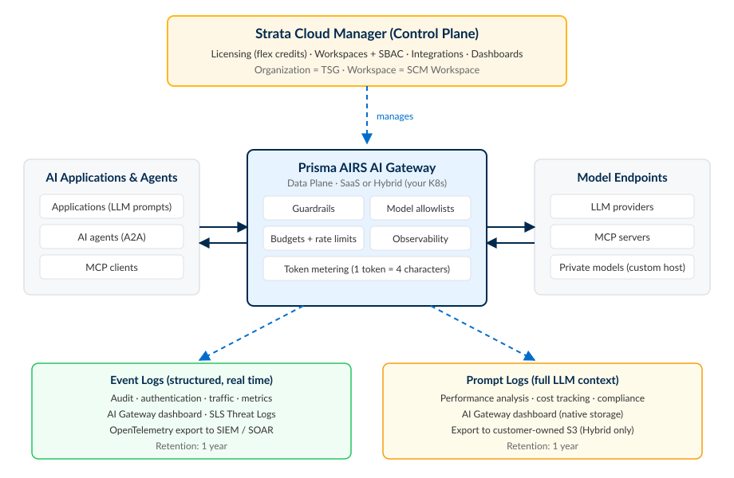
The gateway monitors and audits three classes of AI traffic from a single dashboard:
- LLM prompts — requests and responses between your applications and model providers.
- MCP interactions — Model Context Protocol traffic between agents and MCP servers, including servers authenticated with API keys or static tokens via custom headers.
- Agent-to-agent (A2A) communication — traffic exchanged directly between AI agents.
All three classes are metered by token consumption against your flex credit allocation, and all three appear in the unified AI Gateway dashboard.
You can name the three traffic classes the gateway secures and know that all of them are metered and logged the same way.
- Unified AI traffic visibility — monitor and audit all AI interactions across prompts, MCP, and A2A traffic from a single dashboard.
- Flexible logging — event logs stream to SIEM and SOAR tools via OpenTelemetry-compatible endpoints; prompt logs are stored natively with 1-year retention and, on Hybrid deployments, can be exported to a customer-owned S3 bucket.
- Guardrails — Basic and third-party guardrails are supported out of the box; Check Language and Detect Gibberish are included in the Basic tier.
- Flex credit licensing — metered by token consumption (1 token equals 4 characters), with identical pricing across both deployment models.
- SCM-managed — full lifecycle management through Strata Cloud Manager with role-based access control via SBAC, the scoped role model Strata Cloud Manager uses to grant administrators access to specific tenants and folders. Palo Alto Networks does not expand the acronym in the official documentation. You do not configure SBAC in this guide; you only need an SCM account whose role can open AI Security in the left navigation, which Step 1.1 verifies.
Each tenant starts with a single default workspace. Multiple workspaces are supported, as is Strata Logging Service (SLS) integration for Threat Logs. SLS is where Threat Logs land; it is not required to deploy or use the gateway, and Step 1.1 explains what to do if your tenant has no SLS instance.
You understand the five capability pillars: visibility, logging, guardrails, flex credit licensing, and SCM management.
AI Gateway reuses the SCM tenancy and access model rather than inventing its own. Two mappings matter for everything that follows:
| AI Gateway Concept | Strata Cloud Manager Equivalent |
|---|---|
| Organization | TSG (Tenant Service Group) |
| Workspace | SCM Workspace (role-based access via SBAC) |
When Phase 3 talks about provisioning an integration to a workspace, that workspace is an SCM workspace, and who can touch it is governed by SBAC roles. When Phase 1 maps your deployment profile to a TSG, that TSG is your AI Gateway organization boundary.
You can state where an "organization" and a "workspace" live in SCM terms before configuring either.
AI Gateway is one pillar of Prisma AIRS, and its guardrails are intentionally scoped. Two detection families are not part of the gateway guardrail set:
- PII (personally identifiable information) detection — handled by AI Runtime, which provides advanced DLP (Data Loss Prevention).
- Moderation — handled by AI Runtime, which provides advanced threat detection.
Palo Alto Networks routes those to AI Runtime because it provides more comprehensive threat detection and DLP capabilities than guardrails cover. If you need inline scanning for prompt injection, data leaks, or malicious content, pair the gateway with the AIRS API Intercept pillar.
You know which detections the gateway guardrails supply and which belong to AI Runtime, so nothing is assumed covered that is not.
AI Gateway is initially available in the Americas region for both SaaS and Hybrid deployments. Check the official documentation for region expansion before planning a deployment elsewhere.
Choose Your Deployment Model
AI Gateway ships in two deployment models. The control plane is always SCM; the choice is where the data plane (the component your AI traffic actually flows through) runs. Pick once here and the rest of the guide follows your choice; the selection persists across the page and between visits.
The two models side by side:
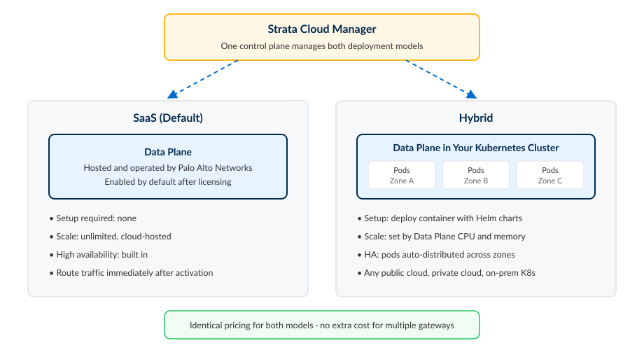
- SaaS — the default. Choose it when you want zero infrastructure work, automatic scaling, and built-in high availability. It is enabled as soon as licensing completes.
- Hybrid — choose it when AI traffic must stay inside your own environment (any public cloud, private cloud, or on-premises Kubernetes cluster), or when you need prompt logs written to storage you own. You operate the data plane; SCM still manages it.
Pricing is identical for both models. There is no cost penalty for choosing one over the other, and no additional cost for using multiple gateways or distributing the data plane.
For most deployments this is an either/or decision, and the rest of this guide treats it that way. Technically, though, the two are not mutually exclusive: the SaaS gateway stays enabled per TSG even after you deploy a Hybrid data plane, so a tenant can run both at once. That is useful for piloting Hybrid alongside existing SaaS traffic, and it is something to switch off deliberately if your reason for choosing Hybrid was that no AI traffic may leave your environment. Phase 2, Step 2.1 (Hybrid) covers the toggle; you will find it on the Hybrid tab of that phase, since the toggle lives on the same Gateway Registration page the Hybrid flow uses.
The SaaS data plane is hosted and operated by Palo Alto Networks.
| Attribute | Details |
|---|---|
| Setup required | None |
| Scale | Unlimited — cloud-hosted |
| High availability | Built-in |
| Management | Strata Cloud Manager (SCM) |
The Hybrid data plane ships as a container image with Helm charts and runs in your own Kubernetes cluster while SCM manages it centrally. Any conformant Kubernetes will do; the platform underneath makes no difference to the deployment.
| Attribute | Details |
|---|---|
| Setup required | Deploy container using Helm charts |
| Cluster | Any conformant Kubernetes that can install a Helm chart |
| Scale | Dependent on CPU and memory allocated to the Data Plane |
| High availability | Multi-zone Kubernetes — pods auto-distributed across failure domains |
| Management | Strata Cloud Manager (SCM) |
Phase 1: License & Activate
AI Gateway is licensed with flex credits and activated through a deployment profile in Strata Cloud Manager. This phase confirms your prerequisites, sizes your license, creates the deployment profile, and maps it to your tenant so the gateway lights up.
Three things must already be true before the AI Gateway tile will do anything useful:
- An activated AI Runtime Security license. If your organization has not activated Prisma AIRS yet, complete Activate Your AI Runtime Security License first.
- A cloud account onboarded and activated in Strata Cloud Manager, per Onboard and Activate a Cloud Account in SCM.
- A Customer Support Portal account on the support account that owns your flex credit pool, with a role that can view Software NGFW Credits and create deployment profiles. Step 1.3 happens entirely in the Customer Support Portal, not in SCM; if you cannot log in at support.paloaltonetworks.com or cannot see the credit pool, request access from your organization's CSP Super User before continuing.
- Optionally, a Strata Logging Service (SLS) instance on the same tenant. SLS is where Threat Logs land. It is not required to deploy or use the gateway, and if your tenant has no SLS instance, the Threat Log checks in Phase 4 (Step 4.3 and Step 4.5) do not apply to you. SLS is normally provisioned with your Strata subscription; if you are unsure whether you have it, treat those checks as optional rather than as failures.
You also need flex credits available to allocate, and an SCM user whose role can open the AI Security section in the left navigation. If that entry is missing after you log in, your role does not include it; ask your SCM administrator to grant it. Deployment profile creation happens under the Customer Support Portal role above, not under an SCM permission.
Two checks, both of which you can run yourself right now:
- You can log into Strata Cloud Manager and the left navigation shows an AI Security entry. If it is missing, either your AIRS license is not active on this tenant or your role does not grant access; resolve that before continuing.
- You can log into the Customer Support Portal and, under Products → Software NGFW Credits, you can see at least one credit pool with credits remaining. If you see no pools, you are on the wrong support account or your role lacks the permission; ask your CSP Super User.
The cloud account onboarding from item 2 is verified functionally by the AI Gateway card appearing in Step 1.5, so you do not need to check it separately here.
All AI Gateway metering is token-based. Every AI transaction through the gateway (prompts, MCP interactions, and A2A traffic) draws down flex credits by token usage, and you license the instance against your maximum expected monthly token consumption.
The token conversion is the industry standard:
1 token = 4 characters of text
estimated monthly tokens = total characters sent and received per month / 4
billion tokens per month = estimated monthly tokens / 1,000,000,000
Example: 12,000,000,000 characters per month
tokens = 12,000,000,000 / 4 = 3,000,000,000
billions = 3,000,000,000 / 1,000,000,000 = 3To build the estimate, inventory the applications, agents, and MCP servers that will route through the gateway, and for each one approximate: requests per month, average prompt size (including system prompts and context), and average response size. Sum the character counts, divide by 4, and add headroom for growth.
Metering covers the full transaction, not just what you send. Long model responses and large context windows (retrieved documents, tool schemas, conversation history) dominate token counts in most real workloads.
You have a single number in billions of tokens per month (with growth headroom) to type into the Billion tokens per month field in the next step. If your estimate comes to under one billion tokens, check whether the field accepts a decimal such as 0.5 before rounding up.
The deployment profile is the licensing object that funds AI Gateway. You create it in the Customer Support Portal (not Strata Cloud Manager), from the credit pool that holds your flex credits. Creating it and finishing setup (next step) is what activates the gateway for your tenant.
Item 5 below asks you to choose Managed Service or Self Service (DIY). That selection is recorded for tracking purposes and is not enforced. Choosing Managed Service here does not block you from standing up a Hybrid data plane later, and pricing is identical either way, so it is not a decision you can get wrong.
- Log in to the Palo Alto Networks Customer Support Portal.
- In the Customer Support Portal's left navigation, expand Products and select Software NGFW Credits. Despite the name, this is the correct page for AI Gateway: flex credits for all Software NGFW and Prisma AIRS products, AI Gateway included, are funded from the same credit pools. Locate the credit pool that will fund the gateway. The pool summary shows total credits, the allocated and consumed meters, and the expiration date. If more than one pool is listed and you are not sure which to use, pick one with enough remaining credits to cover your Step 1.2 estimate and confirm with whoever owns your Palo Alto Networks purchasing.
- Click Create New Profile (above the Current Deployment Profiles table).
- In the Create Deployment Profile: STEP 1 dialog, the products are laid out in labeled columns. Find the column headed Prisma AIRS: and select AI Gateway within it. The dialog calls this the firewall type because the same wizard provisions Software NGFW products; AI Gateway is not a firewall, and selecting it here is correct. Click Next.
- Complete the FORM stage:
- Deployment — select the option matching the model you chose in Choose Your Deployment Model: Managed Service if you chose SaaS (Palo Alto Networks hosts the data plane), or Self Service (DIY) if you chose Hybrid (you host the data plane). If you are still undecided, choose Managed Service; as the note above explains, this selection is not enforced.
- Profile Name — a descriptive name, for example
AI-Gateway-Deployment-Profile. - Billion tokens per month — the billions figure you calculated in Step 1.2.
- Bundled — no action needed. Strata Cloud Manager Pro is bundled with AI Gateway automatically and cannot be deselected. Its cost is included in the credit estimate you see in the next item, so that estimate covers more than AI Gateway alone.
- Notes — optional.
- Click Calculate Estimated Cost. The dialog shows how many credits this profile will draw and how many remain available in the pool; this is the flex credit allocation.
- Click Create Deployment Profile. The dialog closes and returns you to the Software NGFW Credits credit pool page, with your new profile listed in the Current Deployment Profiles table at the bottom. Stay on this page; the next step starts from that table.
Credit pool page with the Create New Profile button (steps 2–3):
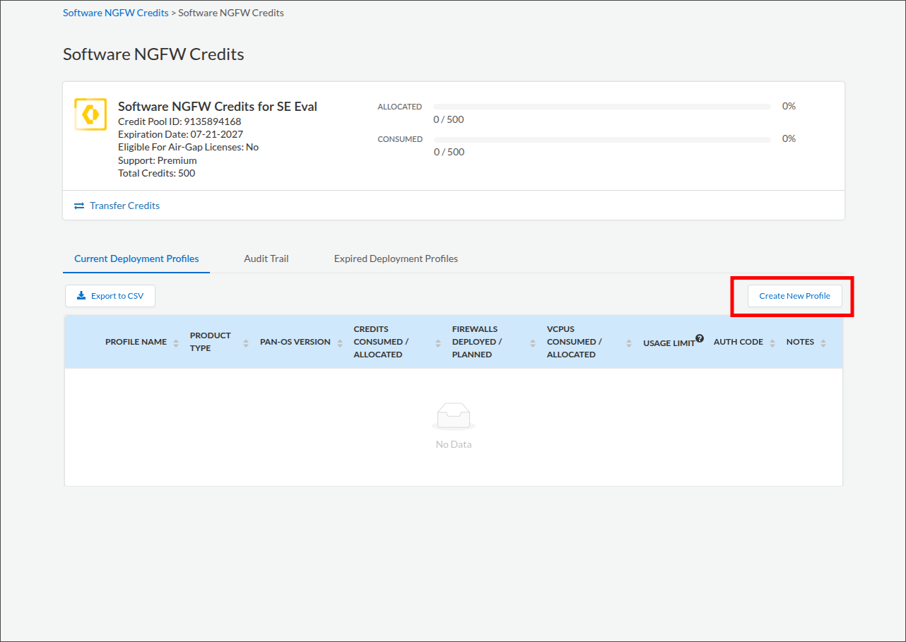
STEP 1: find the Prisma AIRS column and select AI Gateway (step 4):
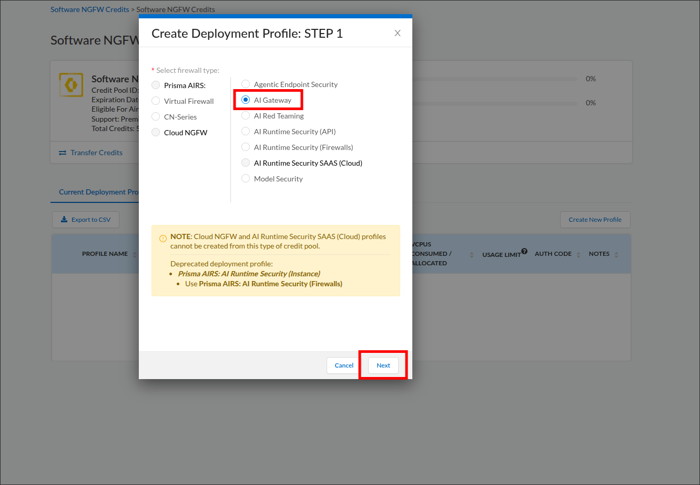
FORM: choose the Deployment type (step 5):
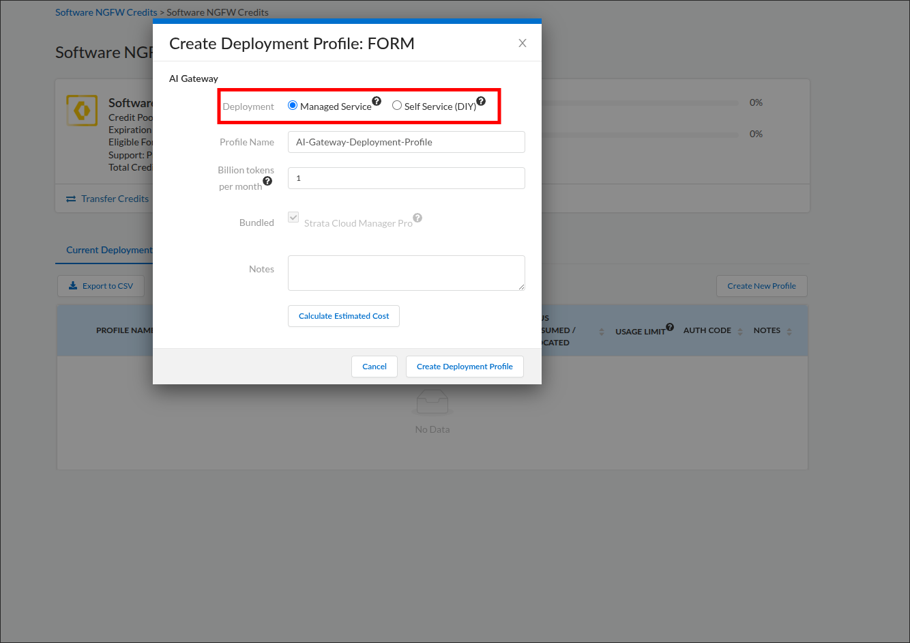
FORM: name the profile (step 5):
FORM: enter the monthly token volume (step 5):
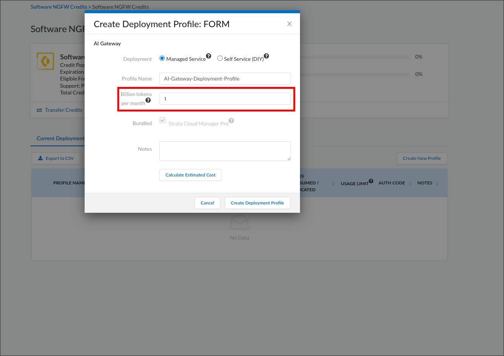
Estimated cost in credits (step 6):
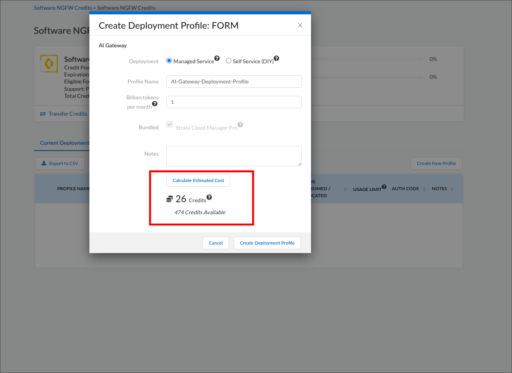
Created profile row (verification):
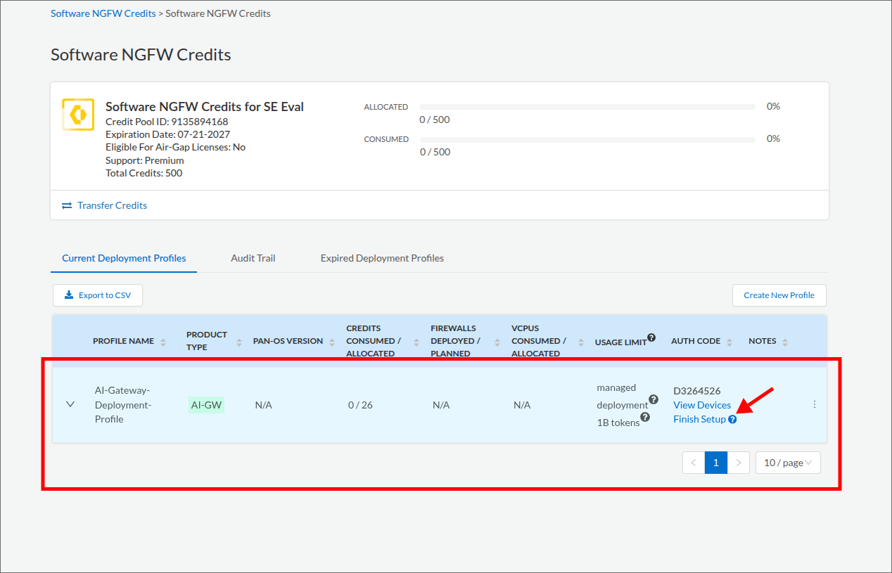
The new profile appears in the Current Deployment Profiles table with product type AI-GW, your credit allocation under Credits Consumed / Allocated, a usage limit reflecting your deployment mode and token volume, and an Auth Code. The Finish Setup link on this row is the entry point for the next step.
Mapping the deployment profile to a Tenant Service Group (TSG) is the link that connects Strata Cloud Manager and the Strata Logging Service to your AI Gateway. The TSG you map becomes the AI Gateway organization (see the concept mapping in the Architecture Overview). The activation form labels the TSG as the Tenant.
- On the same Software NGFW Credits credit pool page from Step 1.3, scroll to the Current Deployment Profiles table and click the Finish Setup link on your AI-GW profile row. If you navigated away after the last step, get back via Products → Software NGFW Credits and reopen the same pool. The Activate Subscriptions based on Deployment Profile(s) page opens.
- Under Select Customer Support Account, choose the support account used to create the deployment profile.
- Under Specify the Recipient, select the Tenant that will own the gateway. This is the TSG.
- Under Select Region, choose your region (for example, United States - Americas). The form will not proceed without it.
- Under Select Deployment Profile(s), check the AI Gateway profile you created (its services column reads Strata Cloud Manager Pro, AI Runtime Security Gateway). Profiles already associated with this tenant are pre-checked; leave them checked, so the selected count will read higher than one. Click Done.
- Leave the Data Loss Prevention and Additional Services sections at their pre-populated defaults. The form pre-fills whatever is already associated with this tenant, and AI Gateway itself requires neither service.
- Change those two sections only if you are deliberately associating a service: select a Data Loss Prevention instance from the DLP dropdown, or check Cloud Identity Engine (CIE, the Palo Alto Networks directory integration service) and pick your instance. If the DLP field is greyed out, the selected profiles need no DLP configuration and there is nothing to do here.
- Check Agree to the Terms and Conditions, then click Activate.
The profile table pre-checks deployment profiles already associated with the tenant. Leave them checked; unchecking an associated profile removes its association when you activate. This is why the screenshot below shows more rows selected than the single profile you just checked.
Activation page: select the Customer Support Account (step 2):
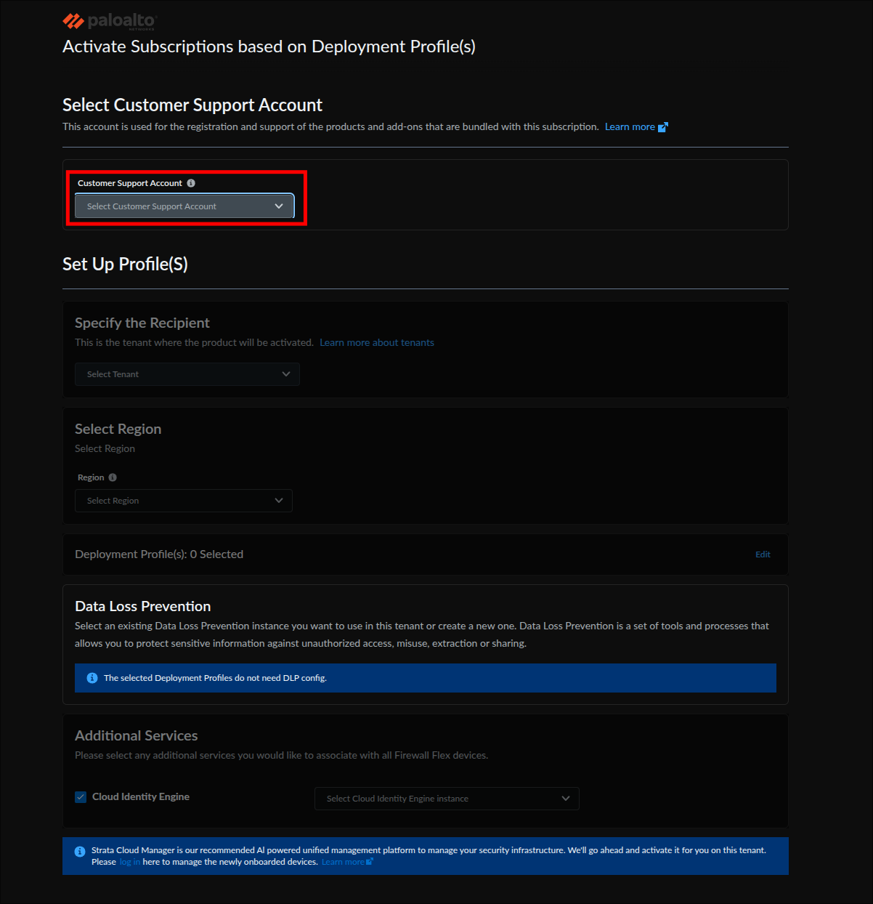
Region is required before activation can proceed (step 4):
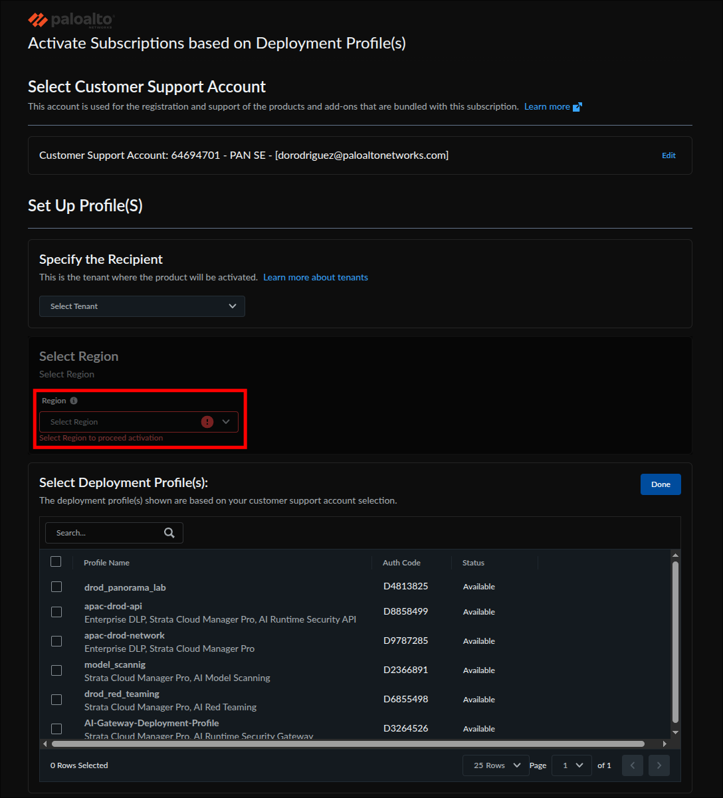
Locate the AI Gateway profile in the deployment profile table (step 5):
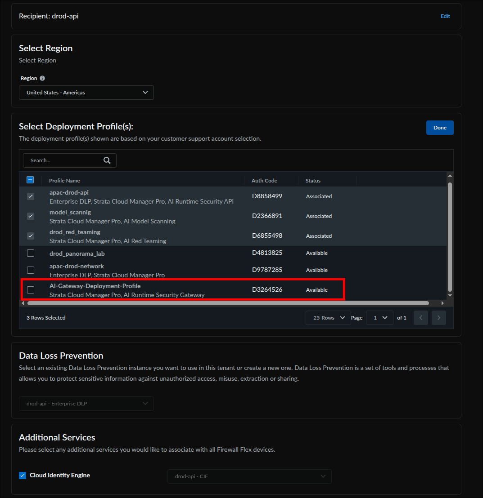
Check the AI Gateway profile and click Done; the other checked rows are existing associations, left in place on purpose (step 5):
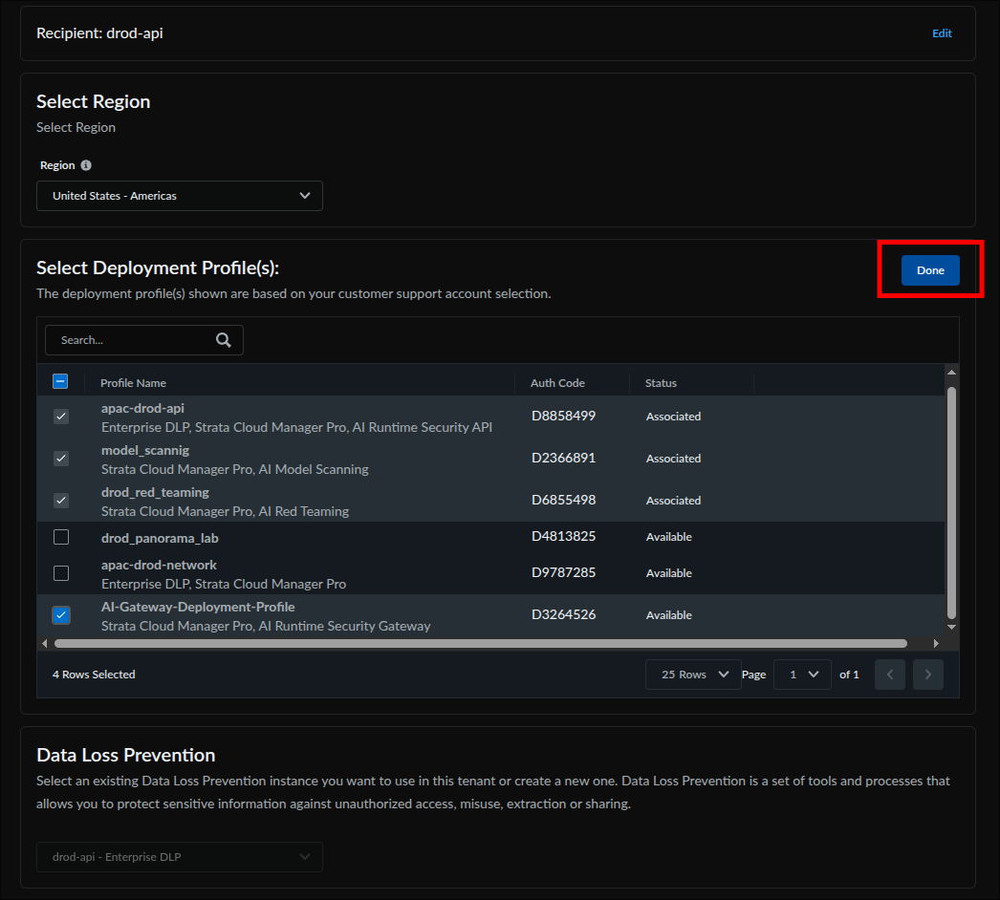
Leave DLP and Cloud Identity Engine at their pre-populated defaults (steps 6–7):
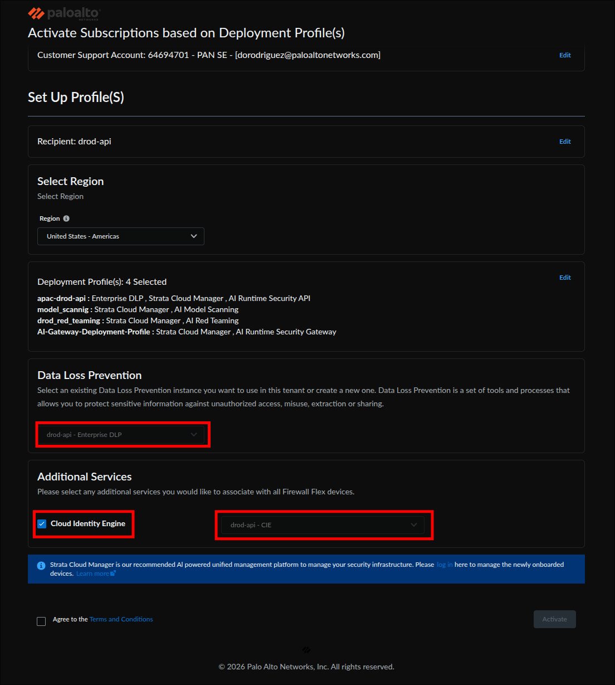
Agree to the terms and activate (step 8):
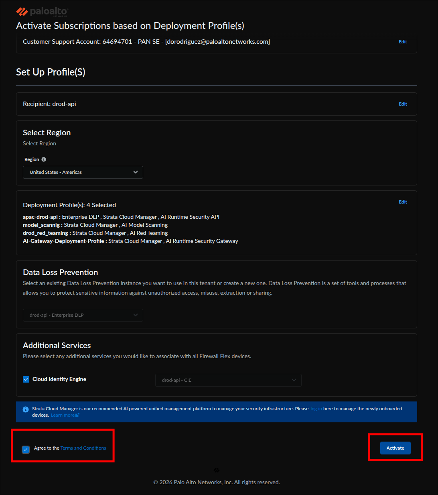
The initial association between the deployment profile and the TSG may take up to 30 minutes to complete. If the next step's verification fails immediately after activating, wait and retry before troubleshooting.
Activation completes without errors. SCM and SLS are now linked to the gateway, which also enables Threat Log visibility in the SLS dashboard later. The AI Gateway tile check in the next step is the functional confirmation of this mapping.
With licensing in place, complete setup from inside SCM:
- Log into Strata Cloud Manager.
- In the left navigation, select AI Security → Home. The menu also exposes an AI Gateway section (Observability, Catalogs, Security Keys, Policies & Profiles, Integrations, Workspace Control, Admin Settings) that later phases use.
- On the Home page, locate the AI Gateway card under Select a feature to begin onboarding. On a fresh tenant (status Not Started) it offers three actions: Go to Gateway Registration, Launch AI Gateway, and Deploy Hybrid. Do not click any of them yet. Seeing the card is the verification for this step, and Phase 2 works from the left navigation rather than from this card, because the card is state-aware and stops offering these actions once a gateway exists. (For reference on a return visit: once a registration is in progress, the status changes to In Progress and the actions become Go to Gateway Registration, Configure AI Gateway, and a Manage link.) Continue to Phase 2.
The AI Security entry in the left navigation (step 2):
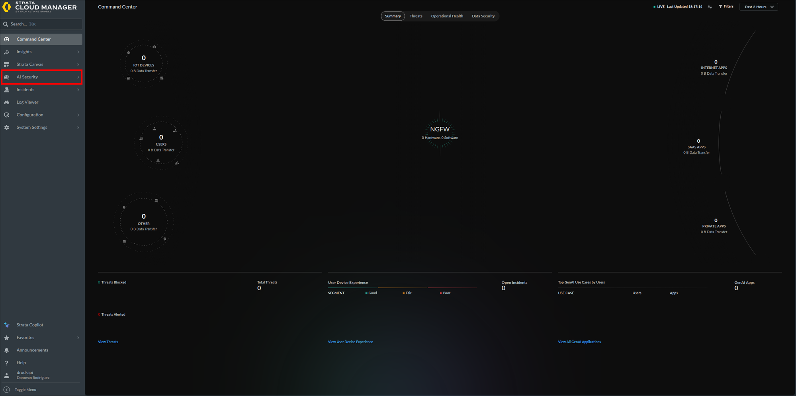
The AI Security menu with Home at the top and the AI Gateway section below (step 2):
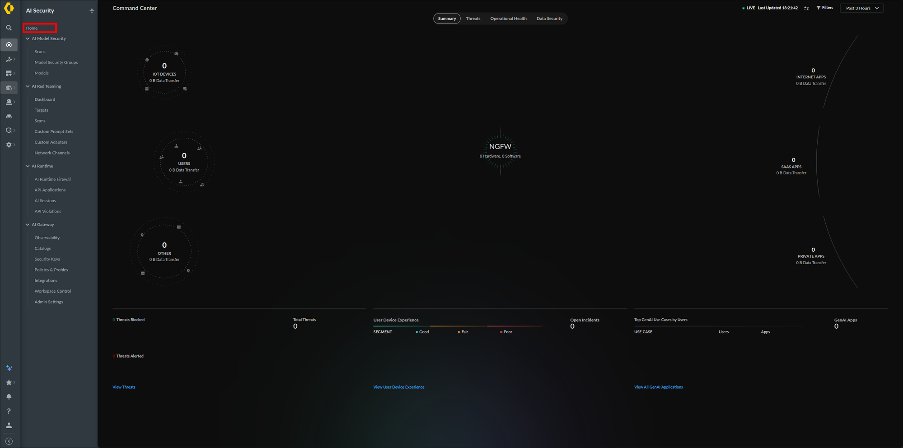
The AI Gateway onboarding card with its three actions (step 3):
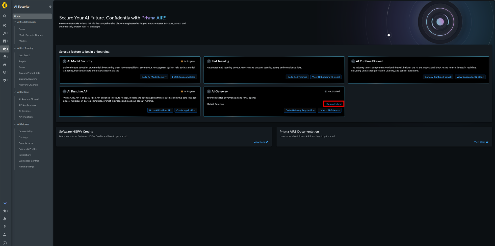
The AI Gateway card appears on the AI Security Home page with its three actions available, confirming the deployment profile and TSG mapping took effect. A Not Started status on the card is expected at this point; it reflects onboarding progress, not a licensing problem. If the card or its actions are missing, wait out the association delay from Step 1.4, then recheck Steps 1.3 and 1.4.
Phase 2: Enable the Gateway
This phase brings the data plane online. What that means depends entirely on the deployment model: the SaaS gateway is deployed by default with no additional work, while Hybrid registers a gateway in SCM, produces a Helm values.yaml, and installs the data plane into a Kubernetes cluster you provide. The selector below mirrors your earlier choice.
The SaaS gateway is deployed and enabled by default. After licensing activation there is no infrastructure work and no registration wizard to run: you can start routing AI traffic through the gateway immediately. Scaling is automatic and high availability is built in.
- Open AI Security → AI Gateway → Observability in SCM.
- Confirm the Observability dashboard loads without errors. On a fresh tenant the Analytics panels all render at zero; the page loading at all is the confirmation that the SaaS gateway is enabled for your tenant. There is no separate "active" status indicator to look for.
Observability in the AI Gateway navigation:
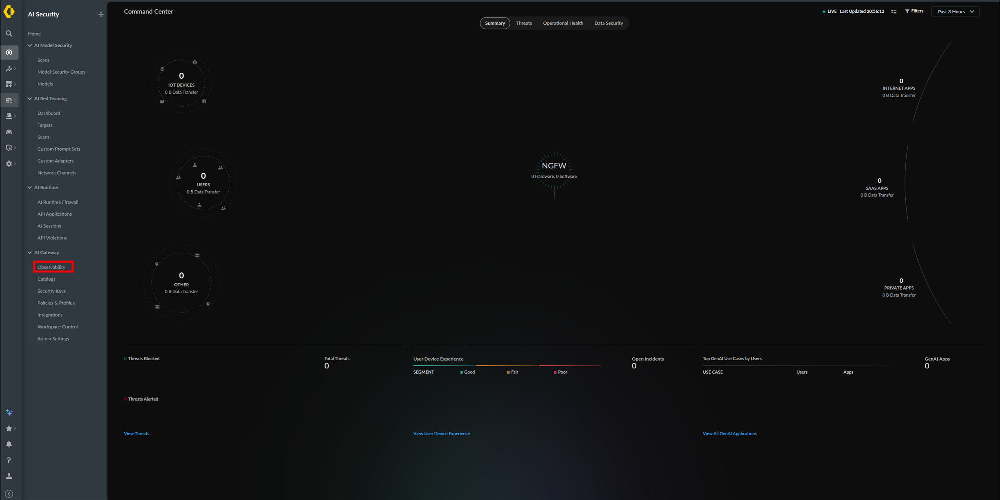
On a fresh tenant the dashboard loads with all metrics at zero:
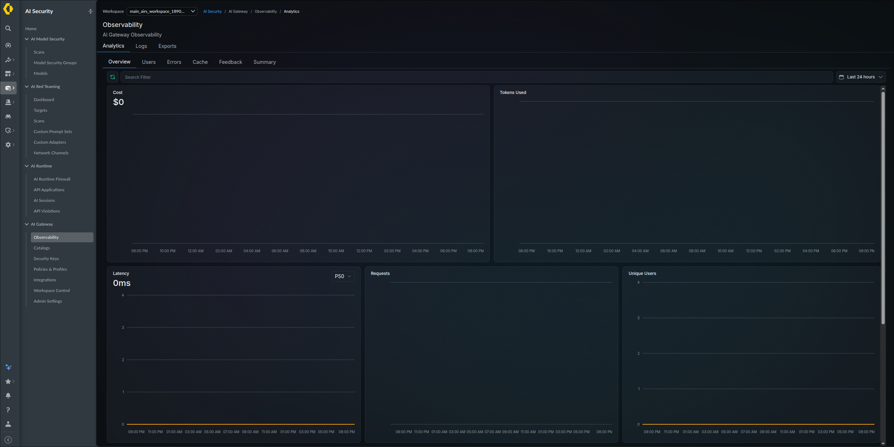
The Observability page loads with its Analytics panels (Cost, Tokens Used, Latency, Requests, Unique Users) rendering at zero. The Logs and Exports tabs alongside Analytics are the views Step 3.8 and Phase 4 use. Nothing else needs to be deployed; continue to Phase 3 to add your first LLM integration.
The Hybrid data plane ships as a container image with Helm charts and can run in any Kubernetes cluster you control, in a public cloud, a private cloud, or on-premises. Registration comes first: SCM creates the gateway record and generates the deployment values your cluster will use.
- Open AI Security → AI Gateway → Admin Settings and select the Gateway Registration tab. This is the durable home of the Hybrid flow; the Deploy Hybrid button on the AI Security Home card leads to the same place, but that card is state-aware and stops offering the button once a gateway exists.
- Click Add New Gateway (the button may render with a leading
+), at the right-hand end of the header row that shows the Total Gateways count, below the SaaS Gateway row and the search box. The Gateway Registration wizard opens with three stages: Register Gateway, Workspace Provisioning, and Configure Gateway Deployment. - Enter a Gateway Name.
- Select the Gateway Type: Production or Non Production.
- Click Next.
The Gateway Registration tab, before any gateway exists:
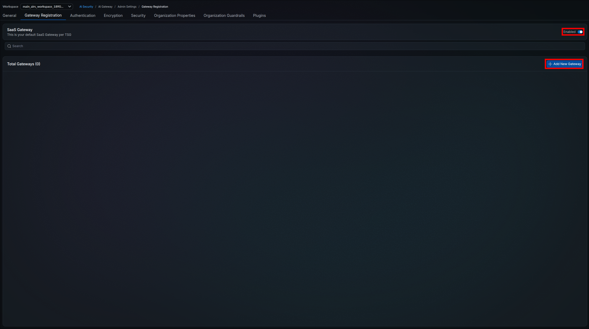
After clicking Add New Gateway, the wizard's first stage:
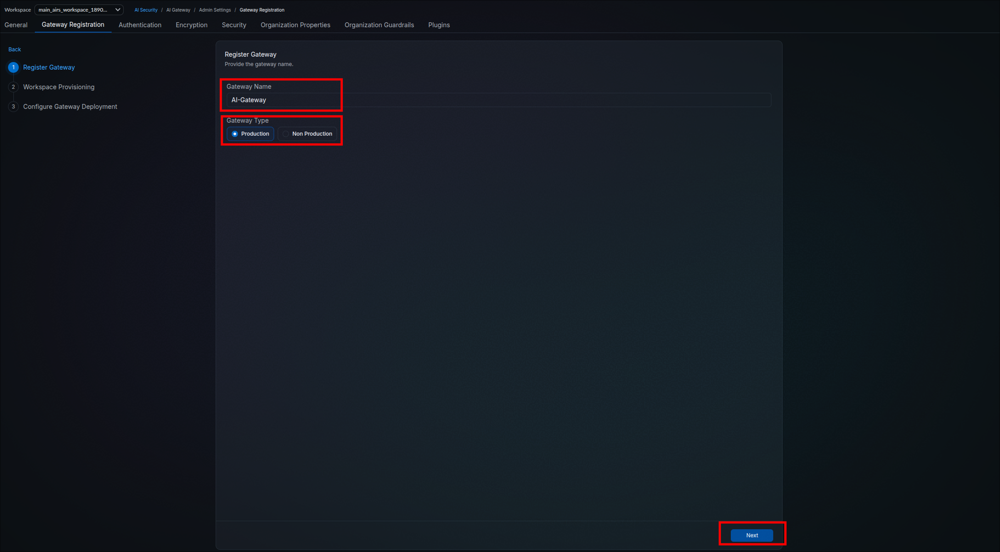
Deploying Hybrid does not disable the SaaS gateway. Both run in parallel, and the SaaS Gateway row at the top of this page stays Enabled per TSG regardless. If your reason for choosing Hybrid is that AI traffic must never leave your environment, switch that row's toggle off once Step 2.7 shows your data plane healthy and you have proven a request through it. Turning it off earlier takes your gateway offline, and breaks any client already pointed at the SaaS endpoint.
The counter reads 0 on a tenant that is already serving traffic through the SaaS gateway, because the SaaS gateway is the separate row above rather than a list entry. An empty list here does not mean AI Gateway is unlicensed or inactive.
The wizard advances to the Workspace Provisioning stage with Register Gateway marked complete. The gateway does not appear in the Total Gateways list until you finish the wizard in Step 2.3.
The Workspace Provisioning stage controls which workspaces have access to this gateway.
- Choose Allow All Workspaces, or choose Allow Specific Workspaces and switch on the toggle for each workspace that should have access (the list offers Select All, Deselect All, and a search filter).
- Click Next.
Allowing all workspaces:
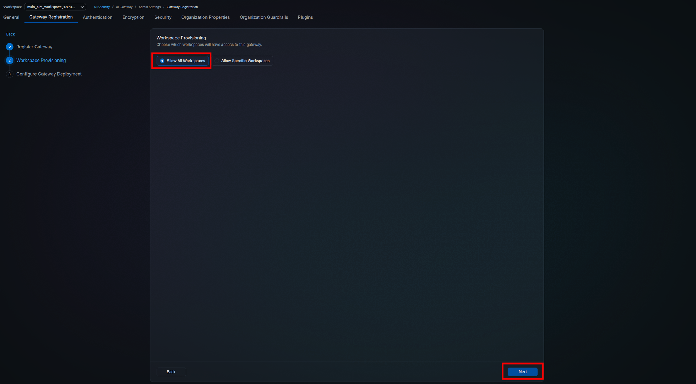
Allowing specific workspaces with per-workspace toggles:
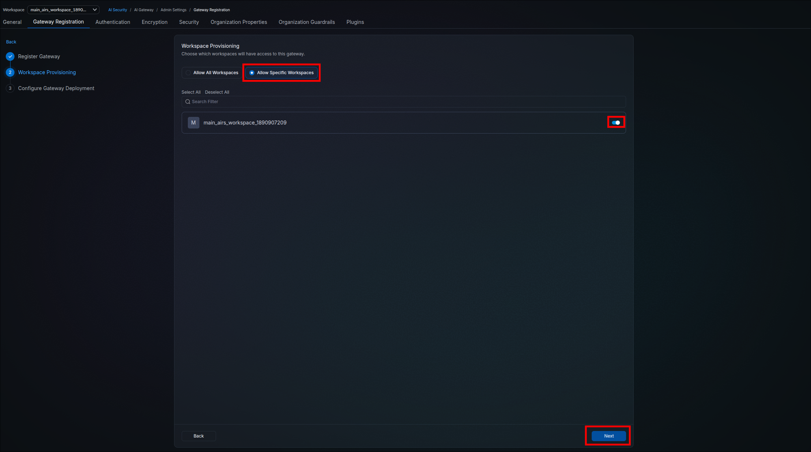
This stage grants workspaces access to the gateway itself. It is separate from the per-integration workspace provisioning you will configure in Phase 3, which controls which workspaces can use each LLM provider connection.
The intended workspaces are enabled and the wizard advances to the Configure Gateway Deployment stage.
The Configure Gateway Deployment stage generates a values.yaml for the gateway's Helm deployment: the container registry location, one-time image pull credentials, and environment secrets.
- Click Download values.yaml, or use the copy icon on the values block in the wizard, and store the file securely. This downloaded file, not the sample shown below, is the file you edit in Step 2.5 and install in Step 2.6.
- Note the Configuration Reference, Deployment guide, and Redis links on this screen. They point into the public Portkey-AI/airs-gw-helm repository, which stays reachable after the wizard closes; the table below reproduces them so you do not have to capture them now.
- Click Done.
Your screen should look like this:
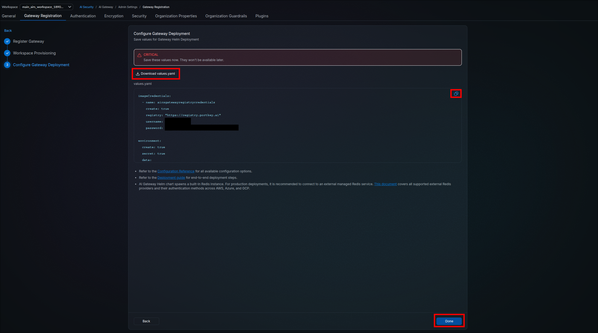
For reference only, do not copy this. Your downloaded file has the same shape, with real values in place of the placeholders and your own secrets under data:
imageCredentials:
- name: airsgatewayregistrycredentials
create: true
registry: "https://registry.portkey.ai"
username: <generated>
password: <generated>
environment:
create: true
secret: true
data:
...After Done, the wizard closes and your new gateway appears in the list:
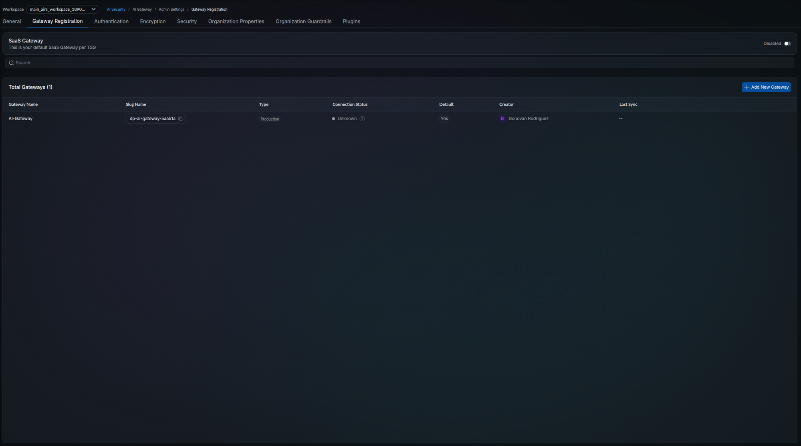
A gateway that has been registered but never deployed reads Unknown, with Last Sync showing --. This is expected, not an error. Registration creates the record in SCM; the status only changes once running pods check in, so Unknown is the normal state for the entire gap between finishing this wizard and completing Step 2.6.
- Slug Name — the copyable identifier (for example
dp-ai-gateway-5aa51a) that names this data plane. Copy it with the icon next to it and record it alongside yourvalues.yaml; slugs are how gateways and integrations are referenced. - Type — the Production or Non Production choice you made in Step 2.1.
- Connection Status — whether the pods are currently reaching the management plane.
- Default — whether traffic that does not name a gateway lands here.
- Last Sync — the last successful check-in, which the data plane repeats roughly every 30 seconds once running.
The wizard warns that these values will not be available later. Download or copy them before clicking Done. Treat the file as credentials: store it in a secret manager and never commit it to a repository.
The wizard's three reference links all resolve into the public Helm chart repository, which is where the rest of this phase draws its commands and configuration from:
| Link on the screen | Where it goes |
|---|---|
| Configuration Reference | Portkey-AI/airs-gw-helm — the chart repository. The full value-by-value reference is docs/Configuration.md. |
| Deployment guide | docs/Configuration.md. The install commands themselves live in the chart README, reproduced in Step 2.6. |
| This document (in the Redis bullet) | chart README, whose cache-store section points to docs/Redis.md for the per-provider authentication options. |
Everything the wizard links to is an open GitHub repository you can read before or after registering. Only the values.yaml on this screen is sensitive, because it carries your image pull credentials and environment secrets.
values.yaml is saved somewhere durable and secret-safe, and the wizard closes after Done.
The data plane is an ordinary container workload delivered as a Helm chart, so it does not know or care what is underneath it. EKS, AKS, GKE, OpenShift, Rancher, k3s, or a self-built cluster on bare metal are all equally valid, and none of them change a single value in the file SCM generated for you. Any cluster that meets the requirements below can run the data plane.
Check these before you install, because every one of them fails at a different and confusing point later if it is missing:
| Requirement | Why the data plane needs it |
|---|---|
| A conformant Kubernetes cluster you can deploy to | The data plane runs as normal pods. Any distribution that passes upstream conformance is fine; there is no minimum managed-service tier and no cloud-specific integration. |
| Helm, with permission to install a release | The chart is the only supported delivery mechanism. Your account needs enough RBAC to create the release's resources in the target namespace. |
Outbound HTTPS on 443 to api.portkey.ai | The pods pull configuration every 30 seconds and push analytics in batches. All management traffic is outbound only, so no inbound path into the cluster is required. |
Image pull access to registry.portkey.ai | The gateway image is pulled from here with the credentials in your values.yaml. The chart's optional bundled components pull from docker.io and quay.io as well, so a mirrored or air-gapped cluster needs all three mirrored. |
| An object store and a Redis the pods can reach | Request and response logs go to an object store, and cached configuration and rate-limit state go to Redis. Step 2.5 configures both; the chart can supply Redis itself but the object store is yours. |
| CPU and memory you can allocate to the pods | Gateway scale is dependent on the CPU and memory allocated to the Data Plane, so the resources you request set your throughput ceiling. Size against the AI traffic volume you estimated in Step 1.2. |
The data plane opens connections to the management plane; the management plane never opens connections to your cluster. That means no inbound firewall rule, no public load balancer, and no VPN back to Palo Alto Networks is needed for management. The chart documents the full list of outbound calls in OutboundAPIs.md.
You can run kubectl get nodes against the target cluster, helm version returns a v3 client, and you have confirmed with whoever runs your network that the cluster can reach api.portkey.ai and registry.portkey.ai on 443.
The values.yaml SCM generated is not ready to deploy as-is. Its environment.data block arrives empty: the file carries your identity and image pull credentials, but says nothing about where logs and cache state go. Two backends have to be filled in before the install.
Installing the downloaded file unmodified gives the gateway nowhere durable to put request and response logs. The log store is the one you must configure; the cache store has a working in-cluster default you can accept, and the vector store and OpenTelemetry export at the bottom of this step are genuinely optional.
Both backends are set the same way, as keys under environment.data in the file you downloaded:
- Log store — an object store holding raw LLM request and response bodies. This is the mechanism behind the prompt logs you will read in Phase 4.
- Cache store — a Redis holding cached configuration, rate limit counters, and budget state, refreshed from the management plane roughly every 30 seconds.
The downloaded file already contains a top-level environment: key holding create, secret, and an empty data. Add your LOG_STORE_* lines underneath that existing data:. YAML does not merge duplicate top-level keys: pasting a second environment: block silently discards the first, taking your gateway's environment secrets with it, and the failure surfaces later as a gateway that cannot authenticate rather than as a parse error. Blocks with their own top-level key, such as minio: and redis:, can be appended anywhere in the file.
Step 2.4 established that the Kubernetes platform underneath makes no difference. Storage is the one place where the environment genuinely does change what you type, because each provider has its own service names, environment variables, and authentication model. Pick the tab matching the storage you already own, which is usually but not always the platform your cluster runs on. Nothing stops an on-premises cluster from writing to S3, or an EKS cluster from writing to in-cluster MinIO.
In every tab, the environment: fragment shows only the keys you add. It is not the whole block. Your downloaded file already contains environment.create, environment.secret, and existing entries under environment.data (your gateway's own credentials). Leave every one of them exactly as it is and add the keys shown underneath the entries already present.
Blocks that carry their own top-level key (minio:, redis:, serviceAccount:, podLabels:) are new and can be appended anywhere in the file.
The chart accepts external Redis settings in two places: as Helm values under redis.external, and as environment keys (CACHE_STORE, REDIS_URL) under environment.data. Use one or the other, not both.
Whichever you use, also set redis.external.enabled: true. The chart deploys its bundled Redis whenever that value is false, which is the default, so setting only the environment keys leaves a bundled Redis running alongside the external one you actually want. That surplus pod is what causes the Service selector overlap described in Step 3.7.
With no cloud object store or managed cache available, the chart can supply both itself. This is the only path that needs no external service and no cloud identity at all, which also makes it the quickest way to prove the deployment works before introducing external storage.
Log store — in-cluster MinIO
Enable the bundled MinIO and point the log store at it. MinIO is disabled by default, so both blocks below are required. Open the downloaded values.yaml in an editor: the lines marked KEEP AS-IS are already in your file with real values, so do not retype or paste over them.
minio:
enabled: true
name: "minio"
authKey:
create: true
accessKey: "<Enter access key here>" # you choose this
secretKey: "<Enter secret here>" # you choose this
persistence:
enabled: true
size: 10Gi
storageClassName: "<Enter storage class here>" # kubectl get storageclass
accessMode: ReadWriteOnce
# ADD these keys under the environment.data already in your file
environment:
create: true
secret: true
data:
PORTKEY_CLIENT_AUTH: ... # KEEP AS-IS, already in your file with a real value
ORGANISATIONS_TO_SYNC: ... # KEEP AS-IS, already in your file with a real value
PORT: "8787" # KEEP AS-IS if present, otherwise add
# add the log store keys below, alongside the ones above
LOG_STORE: s3_custom
LOG_STORE_REGION: "us-east-1" # placeholder value; see note below
LOG_STORE_ACCESS_KEY: "<Enter access key here>" # same as above
LOG_STORE_SECRET_KEY: "<Enter secret here>" # same as above
LOG_STORE_GENERATIONS_BUCKET: "<Enter bucket name here>" # chart creates this bucket
LOG_STORE_BASEPATH: "<Enter bucket name here>" # same bucket nameThere are no regions in a single in-cluster MinIO, but LOG_STORE_REGION should still be set to a plausible value rather than left blank. Region is part of the S3 signature scope, so an empty string can produce signing failures depending on the client. Use us-east-1, the conventional default for S3-compatible storage, and keep the same value everywhere you point a client at this MinIO. A mismatch between what the client signs with and what the server expects is a common cause of SignatureDoesNotMatch errors.
You do not need to create the bucket by hand. On startup the MinIO pod runs an init step that waits for MinIO to come up, then issues mc mb --ignore-existing for the bucket named in LOG_STORE_GENERATIONS_BUCKET.
Set that key even though the chart's own s3_custom example omits it. That example lists only LOG_STORE_BASEPATH, but the MinIO init step reads LOG_STORE_GENERATIONS_BUCKET, and with it unset the command renders as mc mb --ignore-existing minio/ and no bucket is created. Giving both keys the same bucket name satisfies the init step and the gateway's own path handling at once. The key is documented in the chart's Configuration reference as the bucket for generation logs.
Find your cluster's storage class with kubectl get storageclass and use the one marked (default). On K3s and RKE2 that is typically local-path, the Rancher local-path provisioner. The MinIO console can be reached without exposing it, using kubectl port-forward svc/minio 9001:9001, then signing in at http://localhost:9001 with the same access key and secret key you set above.
Check the provisioner before treating this as production storage. A local-path or hostPath provisioner writes to a directory on whichever node the pod lands on, so the volume cannot move: if that node goes away, the data goes with it, and the pod cannot reschedule elsewhere. That is fine for a lab or a first deployment, and it directly conflicts with the multi-replica, spread-across-failure-domains posture described in Step 2.6. For production on-premises, back MinIO with networked storage (Ceph, Longhorn, or an NFS or iSCSI class) so volumes follow their pods.
A related detail worth knowing: a class with VOLUMEBINDINGMODE: WaitForFirstConsumer leaves the PersistentVolumeClaim in Pending until a pod actually schedules against it. Seeing Pending immediately after install is expected with that mode, not a failure.
Cache store — bundled Redis
The chart deploys its own Redis when redis.external.enabled is false, and that is already the default. You do not have to add anything for the cache store: omit the redis block entirely and you get a working in-cluster Redis.
The one default worth reconsidering is persistence, which is off, making the bundled Redis ephemeral. Cache contents rebuild from the management plane on restart, so this is survivable, but a pod restart drops rate limit and budget counters along with the cache. To keep it across restarts:
redis:
statefulSet:
persistence:
enabled: true
size: 2Gi
storageClassName: "<Enter storage class here>"The naming is misleading. When redis.external.enabled is false, the chart composes the connection URL itself from the release name and ignores connectionUrl, but it still reads tlsEnabled, mode, and store from under redis.external and writes them into the Redis Secret. Those three are shared settings that happen to live under an external key, not external-only ones. Their defaults ("false", "standalone", "redis") are correct for the bundled instance, which is why nothing above needs to set them. Only connectionUrl and existingSecretName are genuinely external-only.
To use a Redis you operate yourself instead of the bundled one, set redis.external.enabled: true and give it a connectionUrl such as redis://my-redis:6379, turning on tlsEnabled and authentication if your instance requires them. Setting enabled: true is what stops the chart from deploying its own bundled Redis, so do not omit it.
Amazon S3 for logs and Amazon ElastiCache for the cache store. The examples below use role-based access rather than static keys, which is the recommended pattern on EKS.
Log store — Amazon S3
Using IRSA or EKS Pod Identity, where the pods assume a role through their service account:
serviceAccount:
create: true
automount: true
name: <SERVICE_ACCOUNT_NAME>
annotations:
eks.amazonaws.com/role-arn: <ROLE_ARN>
# ADD these keys under the environment.data already in your file
# (environment.create, environment.secret, and the existing data entries stay as they are)
environment:
data:
LOG_STORE: s3_assume
LOG_STORE_REGION: "<AWS_BUCKET_REGION>"
LOG_STORE_GENERATIONS_BUCKET: "<AWS_BUCKET_NAME>"The role needs s3:PutObject and s3:GetObject on the bucket. serviceAccount.name is a name you choose rather than one you look up, and it must match the system:serviceaccount:<namespace>:<name> subject in the role's trust policy.
Cache store — Amazon ElastiCache
# ADD these keys under the environment.data already in your file
# (environment.create, environment.secret, and the existing data entries stay as they are)
environment:
data:
CACHE_STORE: aws-elastic-cache
REDIS_URL: "redis://<ElastiCache_Endpoint>:<Port>"
REDIS_TLS_ENABLED: "true"
REDIS_MODE: cluster
REDIS_PASSWORD: <Auth_Token>Add REDIS_MODE: cluster only when cluster mode is enabled, in which case use the Configuration Endpoint rather than the Primary Endpoint. The ElastiCache security group needs an inbound rule allowing the cluster. IAM authentication is also supported, using AWS_REDIS_AUTH_MODE: iam with AWS_REDIS_CLUSTER_NAME and REDIS_USERNAME, and requires elasticache:Connect on the role.
Azure Blob Storage for logs and Azure Managed Redis for the cache store. Azure offers three authentication modes for each; Workload Identity is shown first as the recommended option.
Log store — Azure Blob Storage
Workload Identity requires the OIDC issuer and Workload Identity to be enabled on the AKS cluster first:
serviceAccount:
create: true
automount: true
name: <SERVICE_ACCOUNT_NAME>
annotations:
azure.workload.identity/client-id: <MANAGED_IDENTITY_CLIENT_ID>
podLabels:
azure.workload.identity/use: "true"
# ADD these keys under the environment.data already in your file
# (environment.create, environment.secret, and the existing data entries stay as they are)
environment:
data:
LOG_STORE: azure
AZURE_STORAGE_ACCOUNT: <STORAGE_ACCOUNT_NAME>
AZURE_STORAGE_CONTAINER: <STORAGE_CONTAINER>
AZURE_AUTH_MODE: workloadThe alternatives set AZURE_AUTH_MODE to managed, adding AZURE_MANAGED_CLIENT_ID, or to entra, adding AZURE_ENTRA_CLIENT_ID, AZURE_ENTRA_CLIENT_SECRET, and AZURE_ENTRA_TENANT_ID. Create the Storage Account and Blob Container before deploying.
Cache store — Azure Managed Redis
# ADD these keys under the environment.data already in your file
# (environment.create, environment.secret, and the existing data entries stay as they are)
environment:
data:
CACHE_STORE: azure-redis
REDIS_URL: "rediss://<Azure_Redis_Endpoint>:<Port>"
REDIS_TLS_ENABLED: "true"
REDIS_MODE: cluster
AZURE_REDIS_AUTH_MODE: password
REDIS_PASSWORD: <Access_Key>Note the rediss:// scheme for the TLS endpoint. AZURE_REDIS_AUTH_MODE also accepts workload, managed (with AZURE_REDIS_MANAGED_CLIENT_ID), and entra (with the three AZURE_REDIS_ENTRA_ values). Whichever identity you use needs a data access policy on the Redis instance.
Google Cloud Storage for logs and Cloud Memorystore for the cache store.
Log store — Google Cloud Storage
Workload Identity, where a Kubernetes service account impersonates a Google service account:
serviceAccount:
create: true
automount: true
name: <KSA>
annotations:
iam.gke.io/gcp-service-account: <GSA>@<PROJECT_ID>.iam.gserviceaccount.com
# ADD these keys under the environment.data already in your file
# (environment.create, environment.secret, and the existing data entries stay as they are)
environment:
data:
LOG_STORE: gcs_assume
GCP_AUTH_MODE: workload
LOG_STORE_REGION: <GCS_BUCKET_REGION>
LOG_STORE_GENERATIONS_BUCKET: <GCS_BUCKET_NAME>The Google service account needs roles/storage.objectAdmin on the bucket's project, which also covers the cross-project case. To use HMAC keys instead, set LOG_STORE: gcs and supply LOG_STORE_ACCESS_KEY and LOG_STORE_SECRET_KEY.
Cache store — Cloud Memorystore
# ADD these keys under the environment.data already in your file
# (environment.create, environment.secret, and the existing data entries stay as they are)
environment:
data:
CACHE_STORE: gcp-memory-store
REDIS_URL: "redis://<GCP_MEMORY_STORE_IP>:<Port>"
REDIS_TLS_ENABLED: "false"
REDIS_MODE: clusterMemorystore is addressed by IP rather than hostname. Add REDIS_MODE: cluster only when cluster mode is enabled, and set REDIS_PASSWORD if you enabled the AUTH string on the instance.
Every example above writes values directly into values.yaml, which keeps the walkthrough readable but puts credentials in a file. For production, the chart accepts an existing Secret via environment.existingSecret, and Redis separately via redis.external.existingSecretName. The chart also supports vault injection. See the SecretManager documentation.
- Vector store — enables semantic caching, backed by Milvus. On-premises this pairs with the same bundled MinIO. See VectorStore.md.
- OpenTelemetry — pushes analytics to an OTel-compatible endpoint, which is the Hybrid answer to the event log export discussed in Phase 4, Step 4.3.
- Data service — set
dataservice.enabled: truefor custom fine-tuning, batches, and data exports. Fine-tuning data storage currently supports S3 only.
Your values.yaml now has a populated environment.data block naming a log store you control, plus either a cache store pointing at a managed Redis or a deliberate decision to keep the bundled one, which needs no configuration at all. Nothing else in the file generated by SCM has been altered. The full value-by-value reference is in Configuration.md.
With storage configured, the install is four commands. Run them from the directory holding your edited values.yaml, with your kubectl context pointed at the target cluster.
helm repo add airs-gw https://portkey-ai.github.io/airs-gw-helm
helm repo update
helm upgrade --install airs-gw airs-gw/airs-gw \
-f ./values.yaml \
-n airs-gw \
--create-namespaceThe three airs-gw values in that command are different things: the Helm release name (the first argument), the repo/chart (airs-gw/airs-gw), and the namespace (-n airs-gw). If your organization requires a different namespace or release name, change them here and use the same values in every kubectl command that follows, including the in-cluster DNS name in Step 3.7, which is built as <release-name>.<namespace>.svc.cluster.local.
Then confirm the pods came up:
kubectl get pods -n airs-gwOptionally, reach the gateway locally without exposing it, to prove it is listening before you wire any client to it:
kubectl port-forward -n airs-gw pod/<gateway-pod-name> 8787:8787Take <gateway-pod-name> from the kubectl get pods output above, choosing a pod whose name starts with your release name and is not a Redis pod. Target the pod directly rather than svc/airs-gw: Step 3.7 explains why forwarding the Service can land on the bundled Redis pod instead and fail with a confusing named-port error.
The same command installs the release the first time and upgrades it afterwards, so re-running it after editing values.yaml is the normal way to change configuration. To remove the release entirely, use helm uninstall airs-gw --namespace airs-gw.
The chart ships with replicaCount: 1, which is a starting point rather than a production posture. Palo Alto Networks' resiliency guidance describes three or more gateway pods, and the chart exposes autoscaling (defaulting to a range of 2 to 20 replicas when enabled), pod disruption budgets, and topologySpreadConstraints. Spreading pods across failure domains is what buys availability: Availability Zones on a cloud-managed cluster, or your own labeled racks, rooms, or sites on-premises. Confirm the spread with kubectl get pods -n airs-gw -o wide.
Check the logs first: kubectl logs -n airs-gw deployment/airs-gw. Image pull failures point at registry egress or the credentials in values.yaml; crash loops shortly after start usually point at the log store or Redis settings from Step 2.5.
kubectl get pods -n airs-gw shows the gateway pods Running and ready, and kubectl logs shows no repeating connection errors to api.portkey.ai or to your storage backends.
The data plane runs in your environment, but its lifecycle is managed centrally. Registration already happened in Step 2.1; this step confirms the pods you deployed connected back to that registration.
- In SCM, open AI Security → AI Gateway → Admin Settings and select the Gateway Registration tab.
- Find your gateway in the Total Gateways list and confirm its Connection Status now reads Healthy with a green dot, in place of the Unknown it showed before the install.
- Confirm the Last Sync column shows a recent timestamp rather than
--. That column is the live proof: it only advances when the pods reach the management plane.
Your screen should look like this:
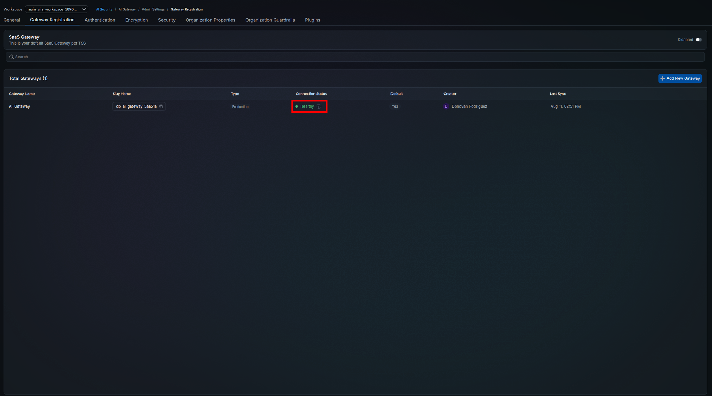
The data plane checks in roughly every 30 seconds, so refresh the page after a minute before treating Unknown as a failure. If the pods are Running from Step 2.6 but the status still does not change, work through these in order:
- Confirm the pods can reach
api.portkey.aion 443, the requirement from Step 2.4. - Check
kubectl logs -n airs-gw deployment/airs-gwfor authentication errors. Those usually mean theenvironment.datacredentials in the downloadedvalues.yamlwere altered or overwritten during the Step 2.5 edits, which is the exact failure the danger callout there warns about.
Your gateway's Connection Status reads Healthy and Last Sync shows a recent timestamp, which together prove the pods from Step 2.6 are reaching the management plane. Configuration from Phase 3 onward applies to this gateway exactly as it would to the SaaS gateway.
Phase 3: Configure an LLM Integration
An Integration is the unit of configuration in AI Gateway: one provider connection with its credentials, cost model, workspace access, budgets, rate limits, and model allowlist. This phase walks the full SCM wizard, from selecting a provider to clicking Create Integration. The wizard has four stages: select a provider, set integration details, provision the workspace, and configure model provisioning. The phase closes by routing a real application, Claude Code, through the gateway to prove the integration end to end.
At any point during the configuration process you can save your selections and return by clicking Save for Later. You do not need to finish the wizard in one sitting.
- In the left navigation, select AI Security → AI Gateway → Integrations. The page opens on the LLM Integrations tab (alongside MCP Registry, Secret References, and Agent Integrations) and shows the total integration count.
- Click + Add LLM Integration.
- The Select the LLM Provider page displays the total number of available providers. Click the tile for the provider you want to connect; it shows as selected. Each integration connects one provider, so to connect several providers, run this wizard once per provider.
- Click Next: Set Details.
The screenshots in this phase use Anthropic as the provider. The wizard steps are the same across the board; only provider-specific fields (such as which optional fields appear) vary.
Integrations in the AI Gateway navigation (step 1):
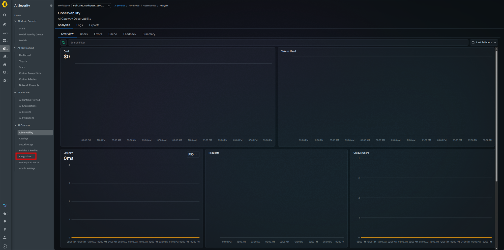
The Integrations page on a fresh tenant, with the Add LLM Integration button (step 2):
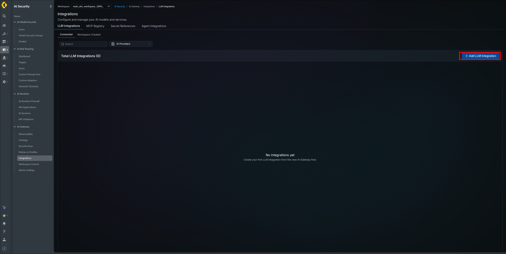
The provider catalog with Anthropic selected (steps 3–4):
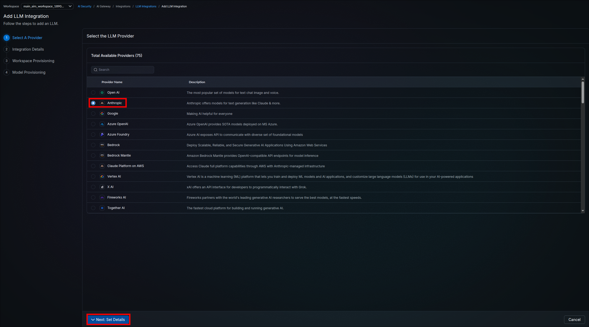
The official documentation does not publish a fixed provider list; the page itself shows the count of providers available to your tenant (75 in the capture above). Privately hosted and local models are also reachable later through the Custom Host option in Step 3.3.
Your chosen provider is selected and the wizard has advanced to the integration details stage.
The Basic Integration Details page opens with your selected provider shown at the top. Steps 3.2 through 3.4 all happen on this one page.
- Provide a Name for the integration (required), for example
default-anthropic. - Optionally provide a Short Description.
- Enter the Slug, for example
default-anthropic. The slug becomes part of the model reference your applications send (@<slug>/<model>, see Step 3.7), so use lowercase letters, digits, and hyphens only, with no spaces or slashes, and keep it unique within your organization. If the field auto-fills from the Name, check it against that rule before continuing: a slug containing a space or a slash breaks traffic in Step 3.8 in a way that is hard to trace back to this field. - Paste the provider API Key. If you do not know where to get one, click the Grab API Key link next to the field for provider-specific instructions.
Your screen should look like this:
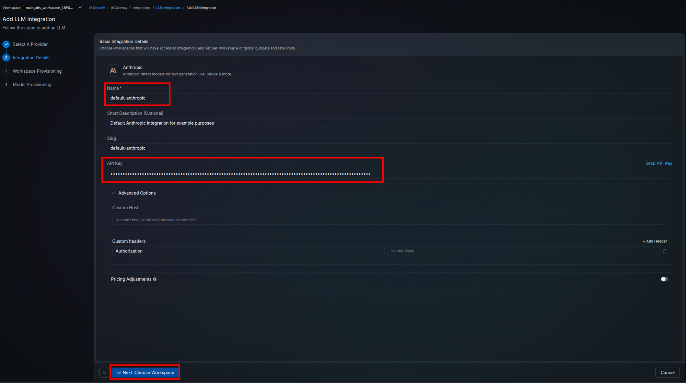
A slug is an identifier for a provider or integration within the AI Gateway. Provider slugs appear in the Model Catalog and are used in API calls to specify a particular provider, so pick a slug your developers will recognize in request paths and configs.
The API key you enter here becomes shared infrastructure: every workspace you later provision consumes the provider through this credential without ever seeing it. Use a dedicated key from the provider (not a personal one), and rotate it at the provider if you suspect exposure.
Name, slug, and API key are filled in, and the optional description says what this integration is for.
Optional fields: some providers expose additional optional fields on this page, such as a project ID or organization. Fill them if your provider account uses them; the Anthropic example shows none.
The Advanced Options section further down the same page covers two routing features:
- Custom Host — routes requests to privately hosted or local models using custom host URLs. Review the host validation and security rules when you set one.
- Custom Headers — for MCP servers that authenticate with API keys or static tokens. These headers are included with every request, and all users share the same credentials.
- Enter the Custom Host URL if this integration targets a privately hosted or local model (the field shows the expected format, for example
https://api.example.com/v1). - Under Custom headers, enter the header name (for example
Authorization) and its value. Click + Add Header to add more header and value pairs as needed.
Advanced Options sit further down the same details page shown in Step 3.2; scroll to reach them:
A custom header rides on every request through the integration and is shared by all users. Treat any token you place in one as an organization-wide credential: scope it minimally at the MCP server and rotate it on personnel or scope changes.
Optional and advanced fields reflect your topology: cloud provider integrations leave them empty, while private model or MCP server integrations have their custom host and headers set.
Pricing Adjustments apply a discount or markup multiplier to the integration so cost tracking reflects your effective rate with the provider. A multiplier of 1 leaves pricing unchanged, 0.8 applies a 20% discount, and 1.2 applies a 20% markup. This affects cost reporting only, never traffic.
The per-token-type field names and the blank-inherits-Default behavior described below have not been confirmed against a live tenant, and no screenshot has been captured for this step yet. If your screen differs from this description, trust your screen. If you do not have negotiated provider rates, leave the toggle off and skip to item 4; nothing else in this guide depends on it.
- Switch on the Pricing Adjustments toggle at the bottom of the details page. Leaving it off keeps list pricing; enable it only if you need to adjust cost tracking.
- Select the mode: Form (the default) for the most common token types, or JSON for the full multiplier shape, including reasoning, audio, image, and additional units.
- Enter a multiplier for each token type the form offers. Expect a default multiplier plus per-token-type overrides, with fields left blank inheriting the default. Confirm that inheritance actually holds in your tenant before relying on it for chargeback.
- When the details page is complete, click Next: Choose Workspace.
This is especially useful for:
- Negotiated Discounts — reflect enterprise contracts or committed-use rates from a provider on the corresponding integration.
- Internal Cost Showback — apply a markup so the cost reported to internal teams or workspaces includes your platform overhead.
- Custom Per-Integration Rates — maintain different effective pricing across multiple integrations of the same provider (for example, a discounted production integration alongside a standard-rate sandbox).
For a discount, convert the percentage to a multiplier:
multiplier = 1 - (discount% / 100)
Example: 10% discount overall, 15% discount on request tokens
default = 1 - (10 / 100) = 0.90
request tokens = 1 - (15 / 100) = 0.85
Enter 0.85 on the request-token field and 0.90 as the default.
Every other token type is then expected to inherit 0.90.If your provider contract has negotiated rates, the multiplier matches the contract math (a 10% discount shows as 0.90). If not, the toggle stays off and reported costs use list pricing.
Workspace provisioning determines which teams and projects can access this integration. This is crucial for maintaining security boundaries and ensuring teams only access approved AI resources. Sharing credentials with a workspace means:
- That workspace sees the integration as an AI Provider in their Model Catalog.
- They can use it immediately; there is no need to enter credentials again.
- You can set different budgets and rate limits for each workspace.
- You can revoke access at any time.
- On the Workspace Access, Budget & Rate Limits stage, check the box next to each workspace that gets access (the toolbar offers Select All, Deselect All, and a search filter).
- Optionally enable Automatically provision this integration for new workspaces. Every workspace created afterwards then receives this integration with the budget and rate limits set here. Understand the consequence before enabling it: limit values cannot be edited after they are applied (see the warning below), so the only way to change a limit for a workspace is to remove that workspace's access and provision it again with new values, which interrupts that workspace's traffic while access is removed. You can turn the automatic provisioning off at any time, and doing so does not change workspaces already provisioned. On a first deployment, leave it off until your limit values are settled.
- Optionally, for each workspace, click Set Value (or select several and use Set Value for All Selected) to open the Set Budget and Rate Limits panel, covered below.
The workspace stage with one workspace selected and its Set Value action:
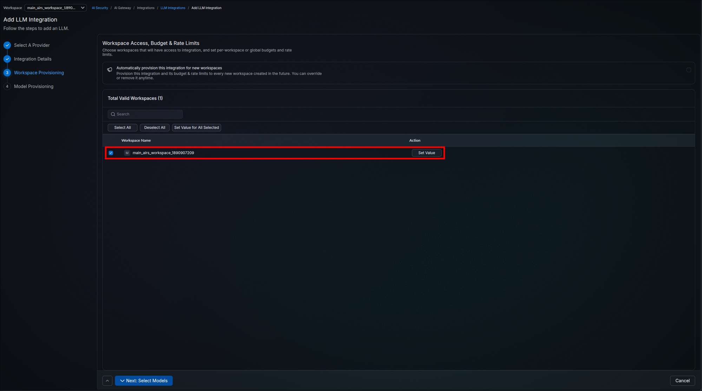
Set Value opens the budget and rate limit panel for that workspace:
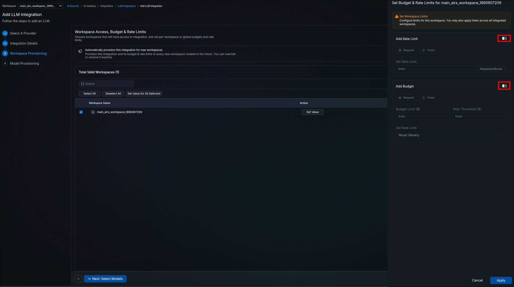
Add Budget: budget limits act as financial guardrails that prevent unexpected AI costs, and they cascade down to all AI Providers created from this integration.
- In the panel, switch on Add Budget.
- Choose the budget type with the Cost or Tokens selector (the same pair appears on the API key form in Step 3.7):
- Cost — a budget in dollars entered in the Budget Limit ($) field. Once reached, the gateway blocks further usage for that workspace through this integration until the budget resets.
- Tokens — a maximum number of tokens that can be consumed, controlling usage independent of cost fluctuations.
- Optionally fill the Alter Threshold ($) field with a dollar amount below the budget limit.
- Set the reset cadence dropdown:
- No Periodic Reset — the budget limit applies until exhausted, with no automatic renewal.
- Reset Weekly — resets at the beginning of each week (Sunday at 12 AM UTC).
- Reset Monthly — resets on the 1st calendar day of the month at 12 AM UTC, irrespective of when the budget limit was set.
The field carries no description in the UI, but it maps to the underlying gateway platform's alert threshold; the on-screen label is a typo, and the API key form in Step 3.7 labels the same control Alert Threshold ($). When spend crosses this amount, the gateway raises an alert without blocking traffic; requests are blocked only when the Budget Limit itself is reached. Example: a Budget Limit of 500 with a threshold of 400 warns at $400 of spend and cuts off at $500. A common practice is to set it at 80% of the budget.
Add Rate Limit: rate limits control the velocity of API usage, protecting against runaway processes and ensuring fair resource distribution across teams.
- In the panel, switch on Add Rate Limit.
- Choose the limit type with the Request or Token selector:
- Request-based — limit the number of API calls (for example, 1000 requests per minute).
- Token-based — limit the token consumption rate (for example, 1M tokens per hour).
- Enter the limit in Set Rate Limit and choose the time window in the unit dropdown next to it (shown as Requests/Minute):
- Per Minute — limits reset every minute, ideal for fine-grained control.
- Per Hour — limits reset hourly, providing balanced usage control.
- Per Day — limits reset daily, suitable for broader usage patterns.
Whether you set a budget, a rate limit, or both, click Apply to save the panel. Clicking Cancel or closing the panel discards everything you entered.
Key considerations for both limit types:
- The minimum cost limit is $1; the minimum token limit is 100 tokens.
- Budget limits apply only to requests made after the limit is set (never retroactively) and hold until exhausted or reset; they cover all AI Providers created from this integration.
- Rate limits apply immediately and cover all organization members who use the provider.
- Setting a rate limit to 0 disables the provider.
- After a rate limit is reached, requests are rejected with a specific error code until the time window resets; error messages clearly indicate that the rate limit has been exceeded.
Together the limits cover cost control, consistent performance, fair distribution across teams, abuse mitigation, and staying within the rate limits your providers impose.
Once set, neither budget limits nor rate limits can be edited by any organization member. Decide the budget amount, type, and reset cadence deliberately, model your peak legitimate traffic before committing a rate value, and remember that 0 turns the provider off entirely.
Each tenant starts with a single default workspace, so a first deployment provisions that one. As you add SCM workspaces for more teams, return here to grant or deny each one access with its own limits.
With every intended workspace checked and its limits applied, click Next: Select Models at the bottom of the stage to advance to the final wizard stage.
The intended workspaces are selected, and every provisioned workspace has an intentional budget and rate limit decision recorded (even if that decision is "no limit"). Budget amounts sit at or above the $1 or 100-token minimums, nothing is unintentionally set to 0, and you accepted the values knowing they are not editable afterward. The wizard has advanced to the Select Models to Provision stage.
Model lists are tied to integrations. When you create an integration, you control which models are available: all AI Providers created from it will only have access to the models you enable. This is essential for:
- Controlling costs — restrict access to expensive models.
- Ensuring compliance — limit models to approved ones.
- Maintaining consistency — standardize model usage across teams.
- You are now on the Select Models to Provision stage, the fourth and final stage of the wizard, reached with the Next: Select Models button at the end of Step 3.5.
- Toggle on the models you want to enable, either individually or with Select All (a search filter helps on long lists). The models you leave off stay unavailable to workspaces, forming your allowlist. Unlike budgets and rate limits, you can change the model list anytime.
- Click Set Pricing on a model as needed. The Update Base Model panel opens with an Add custom pricing for this model? toggle; when enabled you can set Input Cost, Output Cost, Cache Pricing (as JSON, for cache write and cache read token prices), and an optional per-model Custom Host. Left unspecified, the model uses default public pricing. Click Apply.
- Optionally switch on Automatically enable new models from this provider: new models the provider releases become available on this integration by default, and you can disable them later.
- If a model you need is not in the list, click + Add Model (top right).
- Click Create Integration.
The model list with per-model toggles, Set Pricing, Add Model, and the auto-enable option (steps 2–5):
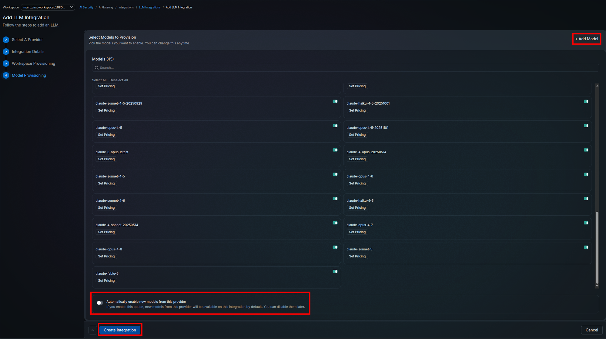
Set Pricing opens the Update Base Model panel (claude-fable-5 shown) (step 3):
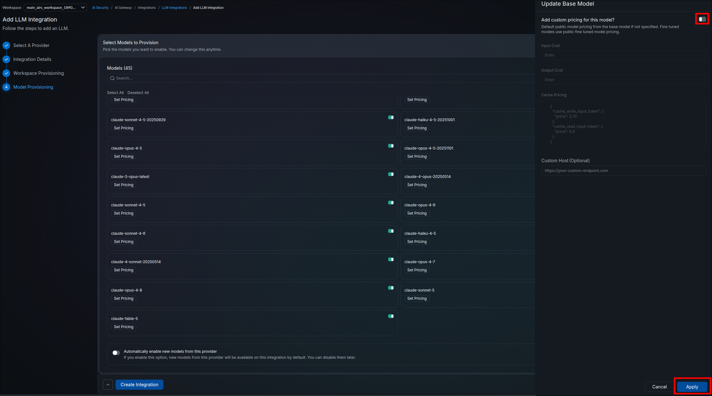
After Create Integration, the new integration appears in the list (step 6):
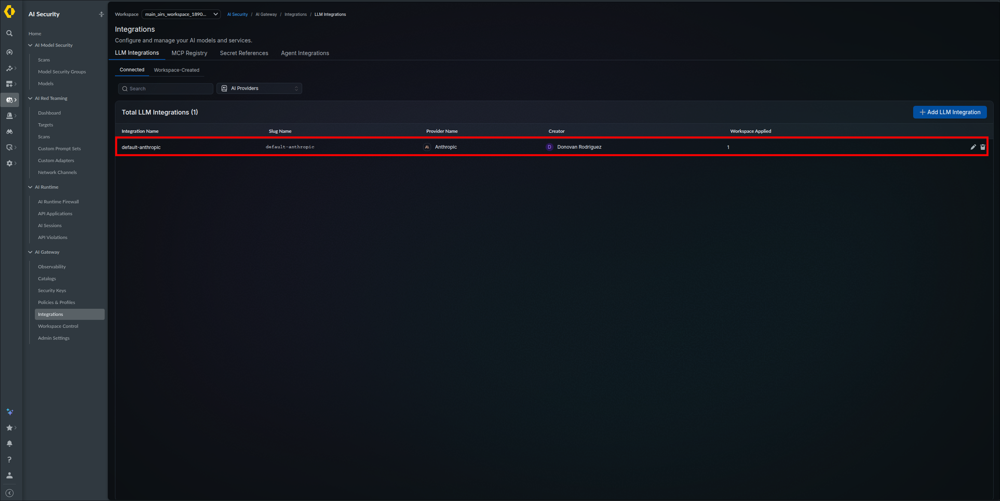
The Integrations page returns with Total LLM Integrations incremented and a row for your new integration showing its name, slug, provider, creator, and applied workspace count (with edit and delete actions). In a provisioned workspace, the provider now appears in the Model Catalog exposing only the models you allowed, without workspace members handling any provider credentials. To see the provisioned model list yourself, open the integration's panel and its Model Provisioning tab as shown in Step 3.7 (the workspace-facing catalog is expected under AI Security → AI Gateway → Catalogs; exact page pending capture). That catalog entry is the end-to-end proof that provider, credentials, workspace access, limits, and model list are all wired together.
The Anthropic walkthrough above is this guide's worked example, but the wizard is identical for every provider in the catalog: the four stages (provider, details, workspaces, models) never change. What changes is the Basic Integration Details page, where each provider requests its own credential and optional fields. The stubs below cover the most common providers; expand each for its specific notes.
For any provider: select it in the catalog (Step 3.1), complete its details page as below, then continue with workspace provisioning, budgets, rate limits, and model provisioning exactly as in Steps 3.5 and 3.6.
- On the Select the LLM Provider page, select the OpenAI tile (listed as Open AI in the catalog) and click Next: Set Details.
- Provide a Name and Slug (for example,
default-openai). - Enter the credential fields the form requests; use the Grab API Key link if you need to create one.
- Continue with Steps 3.5 and 3.6 unchanged.
- On the Select the LLM Provider page, select Google and click Next: Set Details.
- Provide a Name and Slug (for example,
default-google). - Enter the credential fields the form requests; use the Grab API Key link if you need to create one.
- Continue with Steps 3.5 and 3.6 unchanged.
Azure OpenAI serves models from a resource you deploy in your Azure subscription, so expect the details page to ask for deployment-specific values rather than just a key.
- On the Select the LLM Provider page, select Azure OpenAI and click Next: Set Details.
- Provide a Name and Slug (for example,
default-azure-openai). - Enter the credential and resource fields the form requests.
- Continue with Steps 3.5 and 3.6 unchanged.
Bedrock access is governed by AWS identity rather than a single provider key, so expect AWS-style credential fields.
- On the Select the LLM Provider page, select Bedrock and click Next: Set Details.
- Provide a Name and Slug (for example,
default-bedrock). - Enter the AWS credential and region fields the form requests.
- Continue with Steps 3.5 and 3.6 unchanged.
Vertex AI is scoped to a Google Cloud project, so expect project-level fields alongside the credential.
- On the Select the LLM Provider page, select Vertex AI and click Next: Set Details.
- Provide a Name and Slug (for example,
default-vertex). - Enter the credential and project fields the form requests.
- Continue with Steps 3.5 and 3.6 unchanged.
The catalog also includes, among the providers available to the example tenant (75 at capture time):
- Azure Foundry — Azure's API for a diverse set of foundational models.
- Bedrock Mantle — OpenAI-compatible API endpoints on Amazon Bedrock.
- Claude Platform on AWS — Claude platform capabilities through AWS with Anthropic-managed infrastructure.
- X AI — API access to Grok models.
- Fireworks AI and Together AI — hosted open-model inference platforms.
All follow the same pattern: select the provider, complete its details page, continue with Steps 3.5 and 3.6. For models hosted nowhere in the catalog (privately hosted or local), use any provider integration's Custom Host advanced option from Step 3.3.
The integration is live, so the next step is pointing a real application at it. Any application needs three values from your tenant, none of which is the provider key from Step 3.2 (workspace members never see that one):
- Gateway base URL — the endpoint applications send requests to, replacing the provider's own API endpoint.
- Gateway API key — the credential the application presents to the gateway, scoped to a workspace.
- Model reference — the provisioned model to call, addressed through the integration slug from Step 3.2 (this is where the slug appears in request paths and configs).
The official Palo Alto Networks documentation currently covers the SCM configuration side of the gateway but does not yet publish the client-facing connection workflow. The AI Gateway is built on the acquired Portkey platform, and the patterns in this step and the next follow that platform's documented behavior. Treat your tenant's UI as the source of truth for the exact base URL, key workflow, and model string.
Skip this callout entirely if you deployed the SaaS gateway. It applies only to Hybrid, and it changes what item 2 of the list below means for you.
The Gateway URLs value SCM shows is the hosted SaaS endpoint. If you deployed a Hybrid data plane in Phase 2, that endpoint is not where your traffic should go: your gateway is the service running in your own cluster, and requests should be sent to it directly. Everything else in this step is unchanged, since the API key and the model reference come from the same SCM tenant either way.
The address depends on how you exposed the release. Find the service with:
kubectl get svc -n airs-gwThe gateway service publishes two ports: the LLM traffic port (the chart's service.port, defaulting to 8787) and an MCP port on 8788 used in Step 3.9. Your base URL is built from the first one, reached whichever way suits the cluster:
- ClusterIP — the in-cluster DNS name, for callers running in the same cluster:
http://airs-gw.airs-gw.svc.cluster.localon the service port. - NodePort — any node's address on the high-numbered port shown in the
PORT(S)column. - LoadBalancer — the address in
EXTERNAL-IP, once one is assigned. - Port-forward — no cluster changes at all, for a quick test from your workstation.
kubectl port-forward -n airs-gw pod/<gateway-pod-name> 8787:8787With the forward running, http://localhost:8787 is your base URL. Sending traffic straight to your own data plane is the point of Hybrid: prompts and responses never transit a Palo Alto Networks hosted endpoint, while the gateway still reports usage and logs back to SCM exactly as Step 2.7 verified.
Running kubectl port-forward against svc/airs-gw can fail with Pod 'airs-gw-redis-0' does not have a named port 'gateway'. The bundled Redis pod carries the same base selector labels as the gateway, and the gateway Service does not narrow its selector by component, so the Service matches the Redis pod as well. Port-forwarding resolves the Service to whichever pod it picks first, and that can be Redis.
Target the gateway pod directly, using the name from kubectl get pods -n airs-gw. Note the container listens on 8787 even when the Service publishes port 80. The same overlap means the Service can route live traffic to Redis, so confirm which pods are actually behind it:
kubectl get endpoints -n airs-gw airs-gwIf a Redis pod's address appears in that list, requests to the Service will intermittently fail. Using an external Redis, as recommended for production in Step 2.5, avoids the overlap entirely because no Redis pod is deployed.
On-premises clusters have nothing to satisfy a LoadBalancer service unless you have installed a bare-metal load balancer such as MetalLB, so EXTERNAL-IP sits at <pending> indefinitely. The service still works: Kubernetes allocates a NodePort alongside it, visible in the PORT(S) column as 80:31707/TCP, and that high port is reachable on any node. Use the NodePort or a port-forward, or switch the service to ClusterIP and put your own ingress in front of it.
- In the left navigation, select AI Security → AI Gateway → Admin Settings (the last entry in the AI Gateway section). The page opens on the General tab, showing the Organization Details panel.
- Get your gateway base URL. SaaS: copy the value in the Gateway URLs field (shown as
https://aigw.portkey.ai/v1in the capture below). Hybrid: ignore that field, because it is the hosted SaaS endpoint; your base URL is the service running in your own cluster, built fromkubectl get svc -n airs-gwas described in the Hybrid callout above. Either way, the MCP Gateway URLs field beneath it is the equivalent address for MCP traffic, used in Step 3.9. - In the left navigation, select AI Security → AI Gateway → Integrations. On the LLM Integrations tab (its Connected view lists created integrations), click your integration's row (the
default-anthropicworked example). The integration panel slides open on its Integration Details tab; the slug appears as a pill with a copy icon in the panel header, and again in the Slug field below. Record it. - Switch to the panel's Model Provisioning tab. Provisioned LLMs lists every model you enabled in Step 3.6; record the Model Name of the model your application will use (for example
claude-fable-5). The slug and model name combine into the model reference your application sends:@<integration-slug>/<model-name>, for example@default-anthropic/claude-fable-5. - In the left navigation, select AI Security → AI Gateway → Security Keys. The Gateway API Keys page opens with two tabs: Service and User. For this worked example (Claude Code running as you), select the User tab, then click + Create New. A User key is a personal access credential tied to your identity; choose the Service tab instead when creating a key for a backend application or automation that runs unattended.
- The Create New Gateway API Key page opens: a two-stage wizard (API Key Details, then Permissions) with the API Key Type preset to User ("For a specific user's access"). Fill in the details:
- API Key Name — name the key so it identifies its holder or consuming application (the capture uses
drod-api). - Short Description — optional, up to 100 characters; say whose access this is so the row explains itself later.
- Configuration — leave as is; the dropdown reads No configurations available unless your tenant has configs defined on the Policies & Profiles Configuration tab (covered in Step 4.2).
- Metadata — optional JSON tags attached to the key for tracking, for example
{"app": "claude-code"}.
- API Key Name — name the key so it identifies its holder or consuming application (the capture uses
- Review the optional Controls & Limits, each behind its own toggle and scoped to this single key:
- Add Rate Limit — request-based or token-based, with a limit and time window, mirroring the workspace panel from Step 3.5.
- Add Budget — a cost or token budget with Budget Limit ($), Alert Threshold ($), and a Periodic Reset cadence, including a custom reset in days and a next-reset date.
- Add Rotation Policy — automatic key rotation with a Rotation Period (or custom days), Next Rotation At date, and a Key Transition Period during which old and new keys overlap (minimum 30 minutes).
- Auto Expire — a Set Expiry Date after which the key stops working entirely.
- Email Notifications — add recipients with New + to be notified about this key's lifecycle events.
- Click Next: Set Permissions. The Set up Permissions stage lists five permissions, each pairing a gateway resource with the one action that applies to it (the other action columns show n/a). A search filter plus Select All and Unselect All sit above the table:
- Completions — Write: send LLM requests through the gateway. This is the permission Claude Code's prompt traffic uses.
- Agents — Invoke: call agent integrations registered on the gateway.
- Mcp — Invoke: call MCP servers brokered by the gateway (Step 3.9).
- Logs — Write: submit entries to the gateway's logging pipeline.
- Prompts — Render: fetch rendered prompt templates managed on the gateway.
- Click Create Gateway API Key. The Save your Gateway API Key dialog opens with the key masked; use the reveal and copy icons or Copy and Close, and store the key somewhere safe before closing. The key then appears on the User tab with a masked value and Active status.
The dialog states it directly: "Copy this key now. You will not be able to view it again." Once closed, the key cannot be retrieved from the UI. If it is lost, create a new key and retire the old one.
This form labels its budget alert field Alert Threshold ($), confirming that the Alter Threshold ($) label in the integration wizard (Step 3.5) is a typo for the same control.
Admin Settings sits at the bottom of the AI Gateway navigation (step 1):
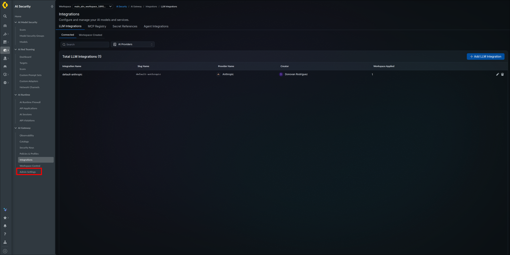
The General tab's Organization Details panel holds both gateway addresses (step 2):
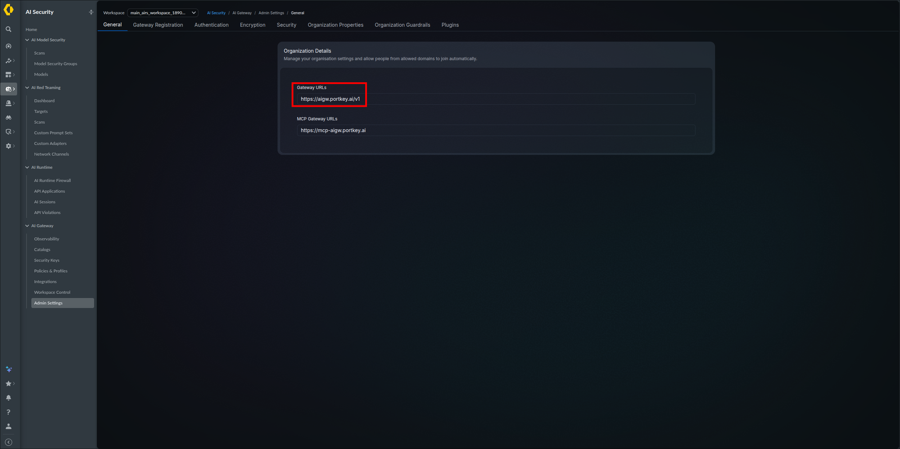
Click the integration's row on the Integrations page (step 3):
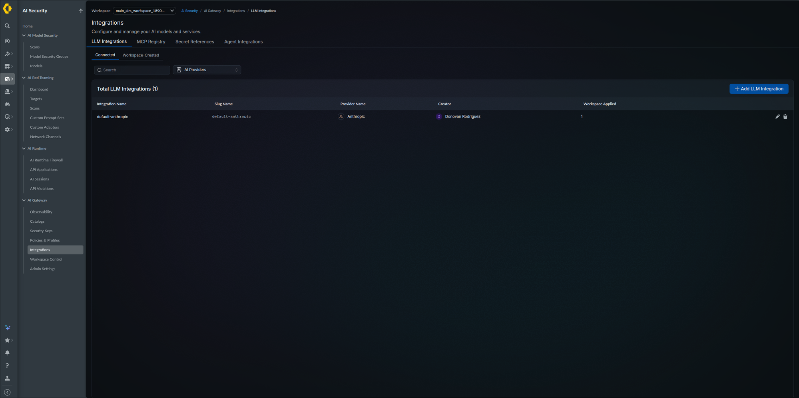
The integration panel opens with the slug in the header and the Model Provisioning tab highlighted (steps 3 and 4):
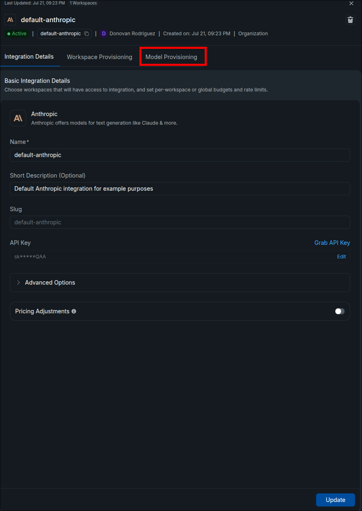
Provisioned LLMs lists the model names to record (step 4):
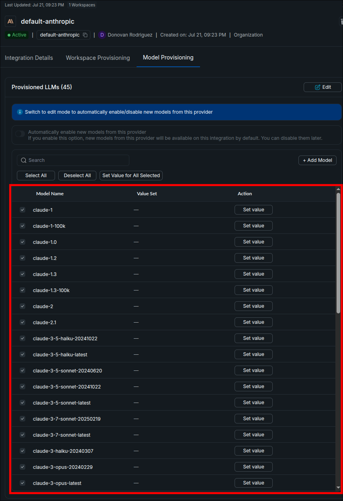
Security Keys with the User tab and Create New highlighted (step 5):
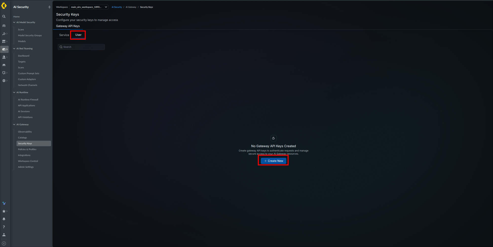
The API Key Details stage with the name and metadata fields highlighted (step 6):
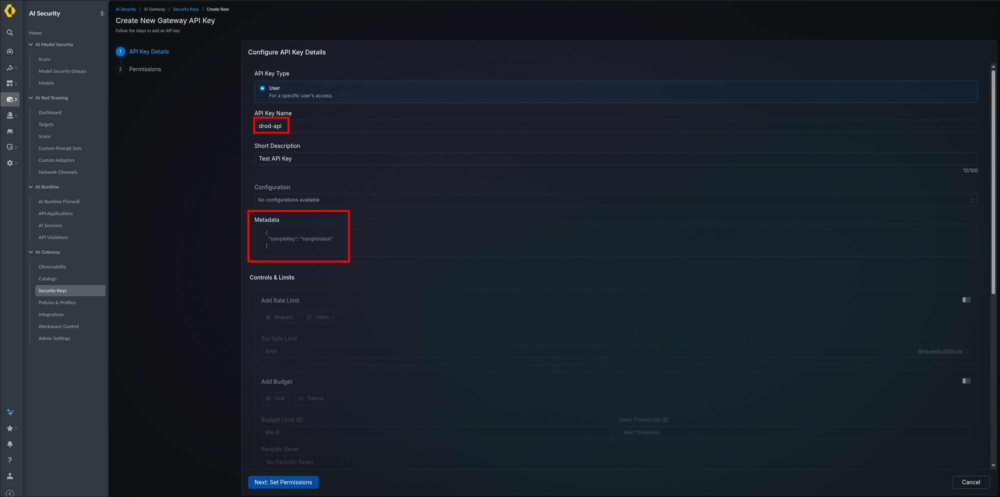
The optional per-key controls: rate limit, budget, and rotation policy (step 7):
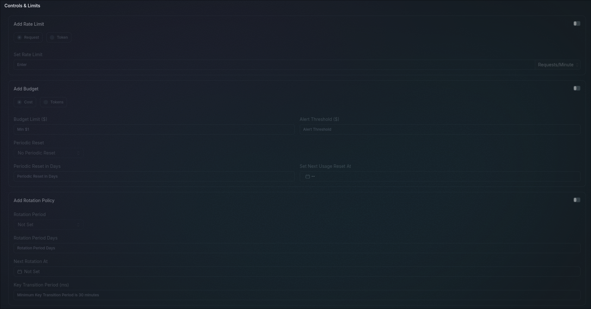
Auto Expire and Email Notifications close out the optional controls (step 7):
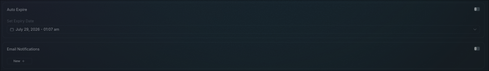
Next: Set Permissions advances to the second wizard stage (step 8):
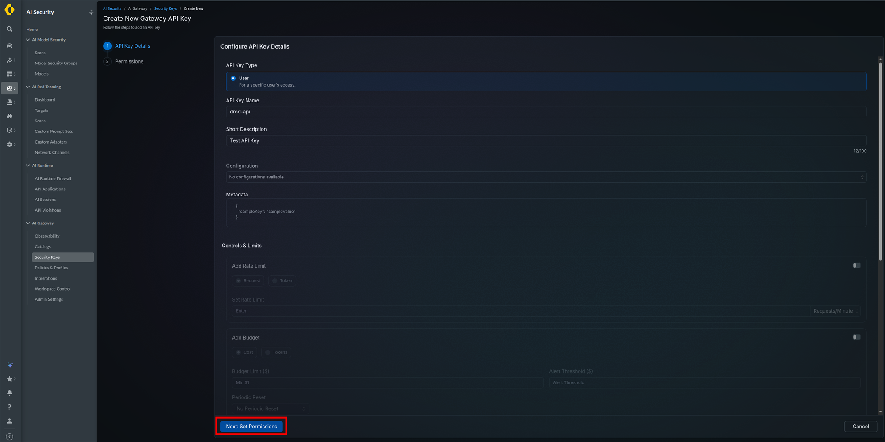
The permissions matrix with all five permissions selected and Create Gateway API Key highlighted (steps 8 and 9):
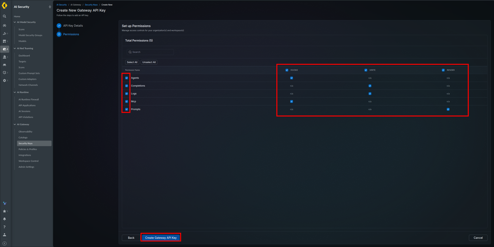
The one-time key dialog; copy it before closing (step 9):
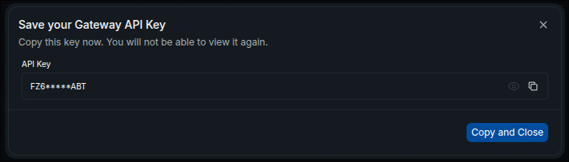
After closing, the key lists as Active on the User tab (step 9):
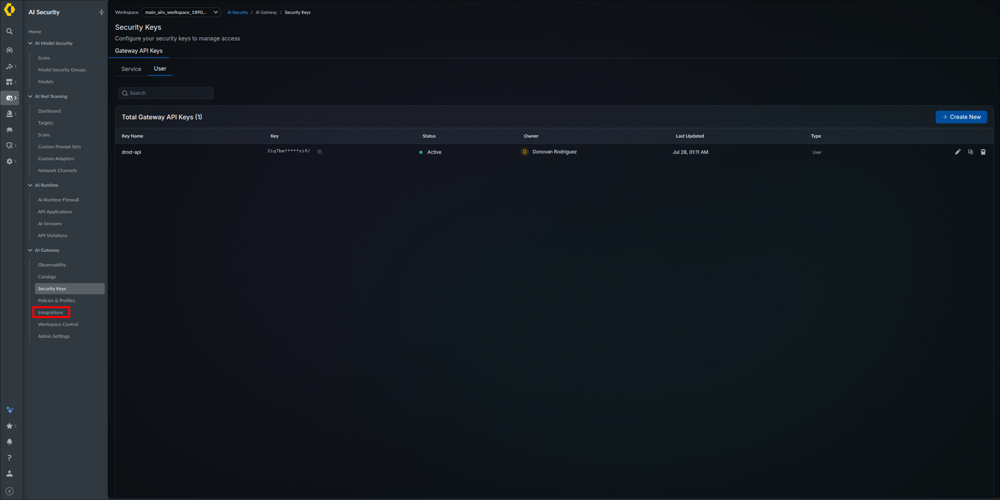
You hold three values recorded somewhere safe: a gateway base URL, a gateway API key created for this application, and a full model reference that includes your integration slug.
Claude Code reads three environment variables for gateway routing: ANTHROPIC_BASE_URL for the gateway endpoint, ANTHROPIC_AUTH_TOKEN for the credential (sent as an Authorization: Bearer header), and ANTHROPIC_CUSTOM_HEADERS to pin the integration (explained below). Test with shell exports first, then persist the values in a settings file.
The Gateway URLs field displays the address with a /v1 suffix (https://aigw.portkey.ai/v1). Anthropic-native clients such as Claude Code append their own /v1/messages path, so set ANTHROPIC_BASE_URL to the address without the suffix: https://aigw.portkey.ai. The underlying gateway platform documents the same rule for its own endpoint. The curl test in step 2 confirms the form your tenant accepts.
- Open a terminal. Every placeholder in this step maps to a value recorded in Step 3.7:
<gateway-base-url>— the Gateway URLs value with the/v1suffix removed:https://aigw.portkey.ai<gateway-api-key>— the User key copied from the Save your Gateway API Key dialog<model-reference>— the slug and model name combined, for example@default-anthropic/claude-fable-5<integration-slug>— the slug alone, for exampledefault-anthropic
export ANTHROPIC_BASE_URL="<gateway-base-url>" export ANTHROPIC_AUTH_TOKEN="<gateway-api-key>" export ANTHROPIC_CUSTOM_HEADERS="x-portkey-provider: @<integration-slug>"Confirm the substitution took before moving on:
echo "$ANTHROPIC_BASE_URL"That must print your gateway address. If it prints a string containing angle brackets, the placeholders were never replaced; re-run the exports with real values.
Why the third variableClaude Code sends bare model names (
claude-fable-5), not@slug/modelreferences, so the gateway cannot tell which integration should serve the request and rejects prompts with400 Either x-portkey-config or x-portkey-provider header is required.ANTHROPIC_CUSTOM_HEADERSattaches thex-portkey-providerheader to every request, pinning this session to your integration. Direct API callers that already use the full@slug/modelreference (like the curl test below) do not need it.Exports live only in this terminalThese variables exist only in the terminal window where you ran the exports. Run everything else in this step, including
claudeitself, from this same window. A Claude Code session started anywhere else still uses your normal login and never touches the gateway; its/statusoutput will show no base URL line. - Confirm the gateway answers before opening Claude Code:
A JSON response starting with
curl -X POST "$ANTHROPIC_BASE_URL/v1/messages" \ -H "Authorization: Bearer $ANTHROPIC_AUTH_TOKEN" \ -H "anthropic-version: 2023-06-01" \ -H "content-type: application/json" \ -d '{"model": "<model-reference>", "max_tokens": 32, "messages": [{"role": "user", "content": "Say OK"}]}'{"id":"msg_and containing a"content":[...]field proves the URL and credential work. An error naming an unknown model still proves both, because the gateway authenticated the request before rejecting the model name. - In the same terminal, run
claude, then run/statusinside the session. The output includes an Anthropic base URL line (shown only when a gateway address is set) and an Auth token line confirming which credential is active. - Send any prompt, then open AI Security → AI Gateway → Observability in SCM (the page you verified in Phase 2: Step 2.1 on the SaaS path, Step 2.7 on the Hybrid path) and check the Logs tab: the request appears with its model, token counts, and cost, and the Analytics panels tick up from zero.
- Persist the configuration so every future session routes through the gateway. If
~/.claude/settings.jsondoes not exist, create it with exactly the block below. If it already exists, add the"env"key inside the existing top-level object, alongside your other settings, rather than pasting the whole block; the file must remain a single JSON object:{ "env": { "ANTHROPIC_BASE_URL": "<gateway-base-url>", "ANTHROPIC_AUTH_TOKEN": "<gateway-api-key>", "ANTHROPIC_CUSTOM_HEADERS": "x-portkey-provider: @<integration-slug>" } }
The base URL and auth token exported in the terminal, key redacted; the third export follows the same pattern (step 1):
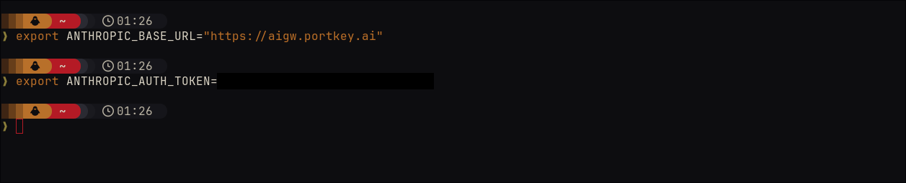
The curl test answered by the gateway; the response opens with an id of msg_ and the requested model replies OK (step 2):
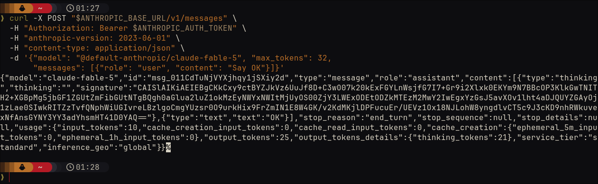
/status now shows the gateway rows (step 3):
A prompt answered through the gateway; the session banner reads API Usage Billing instead of your subscription plan (step 4):
The Analytics Overview after the first request: cost, tokens, latency, one request, one user (step 4):
The request row on the Observability Logs tab: timestamp, model, path, tokens, and cost (step 4):
All three variables in the env block at the top of your own ~/.claude/settings.json, key redacted; any existing settings keep their place below it (step 5):
Claude Code is only the worked example. For a custom AI application, apply the same three values where the code constructs its LLM client: point the base URL at the gateway and swap the provider key for the gateway key. With the Anthropic Python SDK that is two constructor arguments:
from anthropic import Anthropic
client = Anthropic(
base_url="<gateway-base-url>",
auth_token="<gateway-api-key>",
)
message = client.messages.create(
model="<model-reference>",
max_tokens=1024,
messages=[{"role": "user", "content": "Hello through the gateway"}],
)The SDK also reads ANTHROPIC_BASE_URL from the environment, so the exports from step 1 work without any code change. Any other SDK that accepts a base URL override (the OpenAI SDK's base_url argument, for example) follows the same pattern: no application logic changes, only the endpoint and credential.
Never put the gateway key in a project's .claude/settings.json; that file is committed and shared with everyone who clones the repository. Use the user-level ~/.claude/settings.json shown above, or the gitignored .claude/settings.local.json for a single project.
While ANTHROPIC_AUTH_TOKEN is set, it takes precedence over a saved claude.ai login or Console key; the login stays saved and unused. Unset the variable and Claude Code returns to it. When a shell export and a settings-file env block set the same variable, the settings-file value wins; /status shows which source is active. Optionally set CLAUDE_CODE_ENABLE_GATEWAY_MODEL_DISCOVERY=1 so the /model picker lists the models your gateway serves, per the official Connect Claude Code to an LLM gateway documentation.
The curl test returns a gateway-authenticated response, /status inside Claude Code shows the gateway base URL, a prompt sent from Claude Code appears in the Observability page's Logs tab with its token counts and cost, and the settings file keeps the routing in place for every new session. Traffic now flows for Phase 4 to observe.
The gateway brokers more than LLM prompts: Model Context Protocol (MCP) interactions and agent-to-agent traffic route through it under the same guardrails, logging, and metering. Where LLM traffic uses an LLM Integration, MCP servers register on the MCP Registry tab of the same Integrations page from Step 3.1 (alongside Secret References for storing the credentials those servers need).
This step is a skeleton. The outline below reflects the tabs visible on the Integrations page and the MCP coverage in the official documentation, but the registration wizard itself has not yet been walked in a live tenant. Field names, screenshots, and client configuration will be filled in once captured.
The registration flow, at a high level, will cover:
- Opening the MCP Registry tab on the Integrations page.
- Registering the MCP server with its endpoint URL and authentication. Servers that authenticate with API keys or static tokens use custom headers, which ride on every request and are shared by all users (the same caution as Step 3.3).
- Provisioning the registered server to workspaces, mirroring the workspace access model from Step 3.5.
- Pointing MCP clients at the MCP Gateway URLs address from Step 3.7 (
https://mcp-aigw.portkey.aion the Admin Settings General tab) instead of the origin server, so every tool call is logged and policy-checked in flight.
Once the registration flow is documented: an MCP client calls a tool through the gateway address, the call succeeds, and the interaction appears in the Observability logs alongside LLM traffic.
Phase 4: Guardrails & Logging
With traffic flowing, two operational layers remain: the guardrails the gateway applies to AI interactions, and the two-tier logging pipeline that feeds dashboards, SIEM tooling, and compliance storage.
This step maps guardrail coverage only. The walkthrough for enabling and configuring individual guardrails has not yet been captured from a live tenant, and their home in the UI has not been identified (the Policies & Profiles page manages budget and rate policies, not guardrails; see Step 4.2). Until those steps land here, treat this section as a planning reference for which detections belong to the gateway versus AI Runtime, not as a configuration procedure.
The current release supports the following guardrail categories:
| Guardrail | Status | Notes |
|---|---|---|
| Basic guardrails | Supported | Fully available |
| Third-party guardrails | Supported | Fully available |
| Check Language (formerly Pro) | Reclassified to Basic | Available under Basic tier |
| Detect Gibberish (formerly Pro) | Reclassified to Basic | Available under Basic tier |
| PII detection | Not included | Handled by AI Runtime (advanced DLP) |
| Moderation | Not included | Handled by AI Runtime (advanced threat detection) |
PII and Moderation are intentionally handled by AI Runtime, which provides more comprehensive threat detection and DLP capabilities beyond what guardrails cover. Pair the gateway with AIRS API Intercept when you need those detections inline.
Your security requirements are mapped: each needed detection is either covered by a gateway guardrail (Basic or third-party) or explicitly assigned to AI Runtime, with no silent gaps.
The per-workspace budgets and rate limits from Step 3.5 are set inside one integration's wizard. The Policies & Profiles page manages the policy layer above them: budget and rate policies that control spend across models, users, workspaces, or metadata conditions, plus request configurations for gateway traffic.
- In the left navigation, select AI Security → AI Gateway → Policies & Profiles. The page opens on the Budget Limits tab, alongside Rate Limits and Configuration tabs.
- On a fresh tenant the tab shows a No Budget Limits empty state. Click + Add Budget Limit. The Create Budget Limit Policy page opens ("Cap spending or token consumption per group with metadata conditions and per-period resets").
- Provide a Policy Name (for example
drod-example-budget) and an optional Description. - Under Set Budget Limits, choose the Policy Type (the capture shows Cost; the page caps spending or token consumption), then fill Budget Limit ($), an optional Alert Threshold ($), and the Periodic Reset cadence, including a custom Periodic Reset in Days.
- Under Conditions, click + Add Condition to scope the policy: each condition pairs a Condition Key with Includes and Excludes value lists, matching the metadata your requests carry (such as the tags attached to API keys in Step 3.7).
- Under Groups, optionally set Group by Key so the cap applies per group value rather than to the whole matched set.
- Click Create. The policy appears in the Budget Limits list in place of the empty state.
- Switch to the Rate Limits tab for the request-volume equivalent: rate limit policies control request volume across the same dimensions. Click + Add Rate Limit. The Create Rate Limit Policy page opens ("Throttle requests per time period using metadata conditions and group keys").
- Fill it the same way as the budget policy: a Policy Name and optional Description, then under Set Rate Limits choose Requests or Tokens, enter the limit, and pick the time window in the unit dropdown (shown as Requests/Minute). The Conditions and Groups sections work exactly as in the budget form. Click Create.
- Switch to the Configuration tab, which manages reusable request-handling configs. On a fresh tenant it shows a No Configurations empty state; click + Create configs.
- The Create Configuration page is a JSON editor, pre-filled with an example config setting
retryattempts and acachemode. Edit the JSON for the behavior you want and click Save Configuration. Saved configs are what the Configuration dropdown on the gateway API key form (Step 3.7) offers, attaching the request behavior to that key's traffic; the dropdown read "No configurations available" earlier because none existed yet.
Policies & Profiles in the AI Gateway navigation (step 1):
The Budget Limits tab with its empty state and Add Budget Limit highlighted (step 2):
The Create Budget Limit Policy form with its name, limits, conditions, and grouping sections highlighted (steps 3 through 7):
The Rate Limits tab with its empty state and Add Rate Limit highlighted (step 8):
The Create Rate Limit Policy form mirrors the budget form with a Requests or Tokens rate instead of a dollar cap (step 9):
The Configuration tab with its empty state and Create configs highlighted (step 10):
The Create Configuration JSON editor with the example retry and cache config and Save Configuration highlighted (step 11):
The per-workspace limits from Step 3.5 work without any policy created here; policies on this page add organization-wide, condition-scoped controls on top. The config JSON schema (retry, cache, and further request-handling options) follows the underlying gateway platform and is not yet documented by Palo Alto Networks; start from the editor's example and consult the official documentation as it lands.
You can open Policies & Profiles and see its three tabs. Any policy you create appears in the corresponding tab's list in place of the empty state.
AI Gateway separates logs into two categories with different storage and routing strategies. The first category, event logs, are small, structured logs built for real-time SIEM and SOAR ingestion. They include audit events, authentication events, traffic logs, and metrics and analytics.
| Attribute | Event Logs |
|---|---|
| Storage | AI Gateway native; SLS (Threat Logs) |
| Retention | 1 year |
| Dashboards | AI Gateway dashboard; Strata Logging Service dashboard (Threat Logs) |
| Export | OpenTelemetry-compatible endpoints; export from SLS (Hybrid and SaaS) |
- Open AI Security → AI Gateway → Observability (this guide's "AI Gateway dashboard") and confirm traffic events are appearing on the Logs tab. Where audit and authentication events surface has not yet been captured; expect them on this page or its adjacent tabs.
- Check the Strata Logging Service dashboard for Threat Logs (this is what the TSG mapping in Step 1.4 enabled). The SLS dashboard lives outside the AI Security section; its exact navigation path in your tenant has not yet been captured for this guide, so use your tenant's log viewer entry point.
- If you use a SIEM or SOAR platform, point it at the gateway's OpenTelemetry-compatible endpoints, or export from SLS.
The endpoint address and authentication for OpenTelemetry export have not yet been captured from a live tenant (expected home: the Observability Exports tab or Admin Settings). This step cannot be completed from this guide alone yet; consult the official documentation for the export configuration.
Gateway traffic appearing on the Observability Logs tab:
Events generated by test traffic show up in the AI Gateway dashboard, Threat Logs land in SLS, and your SIEM receives the OpenTelemetry stream if configured.
The second category, prompt logs, are large, text-heavy logs capturing full LLM context windows. They are routed to observability tooling for performance analysis, cost tracking, and compliance storage.
| Attribute | Prompt Logs |
|---|---|
| Storage | AI Gateway native |
| Retention | 1 year |
| Dashboards | AI Gateway dashboard |
| Export | Local export to customer-owned S3 bucket (Hybrid only) |
- On the Observability Logs tab, click a request row to open its trace detail. The panel shows a Trace ID, the Request Details (model, total cost, request timing, the provider integration, and the API key that made the call), and the full Request and Response context windows with token counts, each viewable as Pretty or raw JSON.
- Confirm full request and response context is captured for your test traffic.
- Hybrid deployments only: prompt retention in your own storage is configured in the Helm chart rather than in SCM. It is the
LOG_STOREsetting covered in Phase 2, Step 2.5, and the target does not have to be S3: Azure Blob Storage, Google Cloud Storage, and S3-compatible stores you run yourself are all supported. For S3 specifically the data plane needss3:PutObjectands3:GetObjecton the bucket, granted through a role on the pods' service account.
Clicking the Step 3.8 test request opens its trace (steps 1 and 2):
Prompt log export to a customer-owned S3 bucket is available only on Hybrid deployments. If your compliance program requires prompt logs in your own storage, that requirement decides the deployment model back in the Choose Your Deployment Model section.
Prompt logs for test traffic are visible with full context, and Hybrid tenants see objects arriving in their S3 bucket if export is configured.
Walk the whole chain once before handing the gateway to teams:
- License — in the Customer Support Portal under Products → Software NGFW Credits, the AI-GW profile row's consumed meter reflects test traffic. Consumption may not appear immediately after a request; the update latency has not been measured, so allow time before treating a flat meter as a failure.
- Gateway — the data plane is active (SaaS) or registered and healthy in SCM (Hybrid).
- Integration — a provisioned workspace sees the provider in its Model Catalog and can invoke an allowed model without holding provider credentials.
- Controls — a request to a model outside the allowlist fails, and traffic past a rate limit is rejected with a clear rate-limit error until the window resets.
- Logs — the interaction appears as an event log and a prompt log, and Threat Logs reach SLS.
Deployment is complete. AI traffic routes through the Prisma AIRS AI Gateway with credentials centralized, models allowlisted, spend guarded by budgets and rate limits, and every interaction logged to the dashboard, SLS, and your SIEM.
Reference
| Property | Budget Limits | Rate Limits |
|---|---|---|
| Limit basis | Cost (USD) or tokens | Requests or tokens |
| Minimums | $1 cost; 100 tokens | 0 allowed (0 disables the provider) |
| Window / cadence | None, weekly (Sun 12 AM UTC), monthly (1st, 12 AM UTC) | Per minute, per hour, per day |
| Takes effect | On future requests only, never retroactive | Immediately |
| Editable after set | No — by any organization member | No — by any organization member |
| When exceeded | Further usage blocked for the workspace until the budget resets | Requests rejected with a rate-limit error until the window resets |
| Scope | Cascades to all AI Providers created from the integration | The provisioned workspace's use of this integration, across all members using it |
| AI Gateway Term | Where it lives | Notes |
|---|---|---|
| Organization | Tenant Service Group (TSG) | Bound by the deployment profile mapping in Step 1.4 |
| Workspace | SCM Workspace | Access governed by SBAC roles; one default workspace per tenant |
| Integration | AI Gateway (SCM AI Security) | Provider connection plus credentials, limits, and model list |
| AI Provider | Workspace Model Catalog | What a provisioned workspace sees and consumes |
| Slug | Model Catalog and API calls | Identifier that selects a provider or integration in requests |
| Resource | Location |
|---|---|
| Configure AI Gateway (official techdocs) | docs.paloaltonetworks.com/ai-runtime-security/administration/configure-ai-gateway |
| Activate Your AI Runtime Security License | docs.paloaltonetworks.com/.../activate-your-ai-runtime-security-license |
| Onboard and Activate a Cloud Account in SCM | docs.paloaltonetworks.com/.../onboard-and-activate-cloud-account-in-scm |
| Strata Cloud Manager | stratacloudmanager.paloaltonetworks.com |
| AIRS API Intercept Guide | Full AIRS setup (license, profile, API key) |
| AIRS Integrations | Embed AIRS in third-party gateways and tools |
You know where the authoritative sources live. When this guide and the official techdocs disagree, the techdocs win; report the drift so this guide gets refreshed.